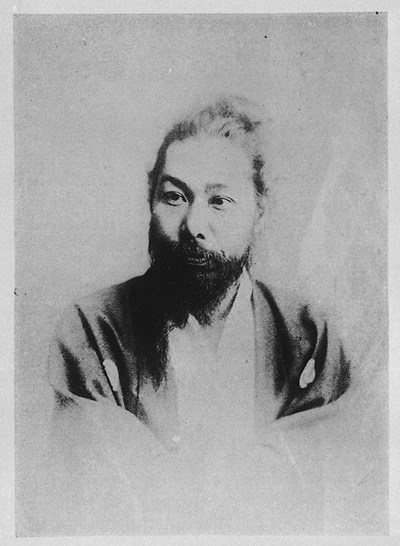
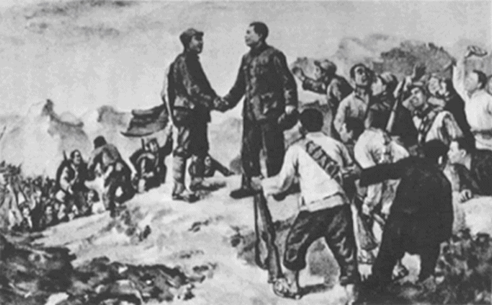
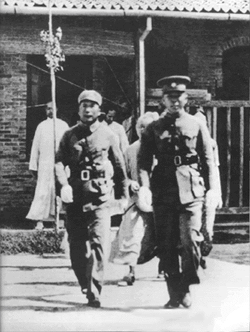
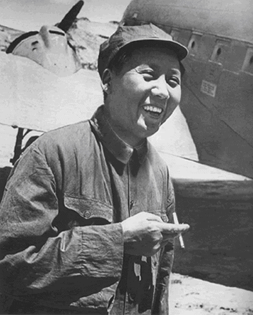
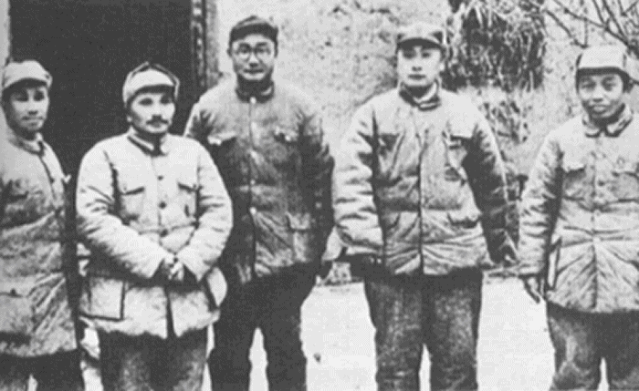

| ２時間で読める中国近現代史: 豊富な写真と平易な文章でわかりやすく 流れがつかみやすい 捏造支那近現代史の旅 | |
| 捏造支那近現代史研究会 | |
| (2019) | |
２時間で読める
中国近現代史
豊富な写真と平易な文章で
わかりやすく流れがつかみやすい
捏造支那近現代史研究会編
目次
【エピソード１ 婦人の尿桶でイギリス軍を撃退しようとした清軍 】 19
十七世紀なかば、衰退した明朝に取って代わり、中国の新たな支配者となったのは異民族王朝の清朝であった。長城の北に興った満州族による征服王朝である清朝は当初こそ、多数派である漢人から執拗な抵抗を受けたものの、歴代の君主が英明だったこともあり、やがて中華帝国の衣鉢を継ぐ正統な王朝として認められるようになった。なかでも十八世紀後半の乾隆帝の時代には西モンゴル、新彊、台湾をつぎつぎと服属させ、その領土も中国史上最大の広さとなった。
乾隆帝
いっぽう、そのころヨーロッパでは産業革命が始まり、時代の歯車も音を立てて大きく回転し始めていた。先頭に立っていたのはイギリスである。当時、すでにインドを植民地としていたイギリスは綿織物業を基幹産業として急速に発展していたが、そこには早くも資本主義特有の問題が発生していた。国内市場が狭く、次々と生産される商品をさばき切れないという問題である。そんなイギリスがインドに次ぐ獲物として狙ったのが巨大な中国市場であった。
産業革命時代のイギリス
しかし、そうしたイギリスの前には大きな壁が立ちはだかっていた。いわゆる朝貢貿易である。中国には、中国こそが世界の中心であり周辺の国々はすべて中国の属領である、とする中華思想がある。この中華思想によれば、外国の国王はみな中国皇帝の臣下であるから定期的に贈り物をもって中国皇帝に朝貢しなければならないとされていた。またこれに対して中国皇帝は見返りとしてそれ以上の品物を「下賜」 するものとされている。これが朝貢貿易という中国独特の貿易システムであった。
とはいえその当時、民間人同士の貿易がまったく行われていなかったわけではない。清朝は原則として海禁政策をとっていたが、広州一港に限っては 外国商人との貿易を認めていた。そのため外国商人がこの広州貿易を通して商取り引きを行うことは可能だったのである。だが、これも清朝政府にいわせれば朝貢貿易の例外的な一形式に過ぎないものであり、その証拠にこの広州貿易には多くの制約が課されていた。
広州湾の貿易船
たとえば、外国商人は清朝政府が認めた行商とだけしか取引ができない、広州には一年のうち夏から初冬にかけての４ヵ月しか居住することができない、それも広州の一角に設けられた特別居住区から一歩も出てはならない、婦女子を連れてきてはならない、といった制約である。だが、これでは外国商人にとっては不便きわまりない。
それに加え当時、イギリスが中国から買っていたのは主に茶と絹であったが、それに対してイギリスが中国に持ち込んだのは本国産の毛織物の他、時計、玩具、インド産の綿花などであった。しかしこれらの品物だけでは中国製品を十分に買うことができなかった上、イギリス本国における茶の消費量はうなぎのぼりに増えるいっぽうだった。そのため茶の支払いに当てる銀が大量に中国へと流出することになり、イギリスは大幅な貿易赤字に悩むことになったのである。
当時のロンドンの喫茶店
困ったイギリスは現状を打破するため１７９３年、マカートニーを北京に派遣した。不便な広州貿易を撤廃し、自由貿易と市場開放を求めるべく清朝政府との交渉を試みようとしたのである。ところが貿易といえば伝統的な朝貢貿易しか認めない清朝政府はイギリスの要求を頭から拒否。マカートニーの要求は一顧だにされなかった。
「天朝の産物は豊富であり、これといってないものはなく、外国の産物は中国にとって必需品ではない。ただ、天朝に産する茶、陶磁器、絹などは西洋各国の必需品である。だから、特別に広東において貿易をゆるし、天朝の余沢にうるおわしめているのである」
これが清朝側の言い分であった。
乾隆帝に謁見するマカートニー
その後、１８１６年にはマーストを団長とする使節を再び北京に派遣したが今度は謁見すら許されず、追い返される始末だった。
だが、貿易赤字という差し迫った問題を抱えるイギリスはそのまま引き下がるわけにはいかない。そこで奸計をめぐらしたイギリスはひとつの妙案をひねりだした。それはインド産アヘンを中国に輸出して茶の代金にあてるという方法である。
阿片窟
アヘンはケシの実からとれる麻薬の一種で、吸飲すると陶酔感、至福感にひたれるが、常用すれば中毒症状をおこし精神も肉体もボロボロに冒され、最後には廃人となってしまう恐ろしい毒物である。しかしイギリスが大量のアヘンを中国に持ち込むとアヘン吸飲の風習は、上は高級官僚から下は一兵卒にいたるまで社会の各層に広がるようになった。それとともにアヘンの輸入量も飛躍的に増大、やがてその支払いには茶や絹の輸出だけでは追いつかなくなった。こうして１８２０年代には貿易収支はついに逆転、大量の銀が中国からイギリスへと流出することになった。その間、清朝は何度も禁止令を出してアヘンを取り締まろうとしたが、腐敗し切った官僚たちはこれを見逃し料ーーつまり賄賂のつり上げに利用しただけで何の効果も奏さなかった。
インドの阿片製造工場
だが、アヘン問題は貿易問題である以上に深刻な社会問題でもあった。そのため当時の中央政界では、このアヘン問題をめぐってさまざまな論議が交わされた。大官のなかにはアヘン弛禁論を提議するものもいたが、その一方で「密売するもの、吸飲するもの、いずれに対しても厳罰をもってのぞみ、とくに官吏でアヘンに手を染めたものは極刑を与ふべし」という厳禁論も主張された。その代表的な論者が林則徐であった。こうしたなか、厳禁論へと傾いた時の皇帝、道光帝はついに決断を下した。１８３９年、アヘン密輸を取り締まるべく林則徐を欽差大臣（全権大臣）に任命し、広州へと派遣したのである。
林則徐
広州に到着した林則徐はただちに外国商人に対し、アヘンの提出を命じた。だが林則徐を他の腐敗した清国役人と同様に見ていた外国商人はこの強硬策もワイロのつりあげが目的であろうとタカをくくり、なかなか応じようとしなかった。そこで林則徐は、提出日の期限切れを待って外国商館のある一三行街を封鎖。水や食糧の供給を絶ってしまった。ことここにいたってはやむをえない。外国商人たちはしぶしぶ約二万箱のアヘンを差し出した。
「うまいこといって林則徐は手に入れたアヘンを横流しして儲けるに違いない」。そんな外国商人の陰口を尻目に、林則徐は没収した アヘンをすべて虎門海岸へと運び込ませた。そして、あらかじめしつらえた人工池にアヘンを投入、そこに塩と石灰を加えて薬効を消し、公衆の面前で海へ流してしまったのである。その上で林則徐は外国商人に「二度とアヘンを持ってこない。持ってきたら死刑に処されても文句は言わない」という誓約書に署名するよう強く要求した。
阿片焼却の図
これに対し、アメリカ人やポルトガル人はすぐに応じたものの、イギリス人だけは頑として応じなかった。それどころか、対清強硬派の貿易監督官チャールズ・エリオットは、イギリス商人を全員広州からマカオへ引きあげさせ、脅しをかけた。だが、イギリス一国が勝手に引きあげたところで清国にとっては痛くもかゆくもない。林則徐はついでにマカオからも退去するようイギリス側に勧告した。にべもない態度だった。
こうしたなか、香港で一人の中国人がイギリス人水夫に殴られて死亡するという事件が発生した。林則徐は犯人の引き渡しを求めたが、エリオットは犯人は不明だとして拒否した。そこで林則徐は報復措置としてマカオ在住のイギリス人に対する食糧の供給を禁じた。
チャールズ・エリオット
両国間の緊張が高まるなか、ジャーディン、マセソンらの働きかけによってイギリス本国でも「清国應懲論」を叫ぶものが増えてきた。やがて應懲論に傾いたイギリス議会は１８４０年２月、ついに清国に対する武力攻撃を決定した。「これほど恥さらしな戦争はない」 と議会内でも反対の論陣を張るものも少なくなかったが結局、わずかの差で可決された。
同年六月、ジョージ・エリオットを総司令権全権使節とするイギリス艦隊が広東沖に到着した。同艦隊はただちに広州湾を封鎖し、ここに阿片戦争の火ぶたが切って落とされた。
イギリス艦隊は清国側の裏をかいて防備の固い広州を迂回し厦門を攻撃した後、北上し、寧波沖の舟山列島を占領した。さらにそのまま大沽から白河をさかのぼって北京をうかがう姿勢をみせた。のどもとにあいくちを突きつけられ、大恐慌をきたした清朝政府はそれまでの強硬姿勢を転換。事件の責任者である林則徐を罷免するとかわりに対外妥協派の筆頭、直隷総督奇善を欽差大臣に任命し、交渉にあたらせた。
厦門の戦い
奇善は、広州で起こったことは広州で処理するといってイギリス艦隊をいったん南下させることに成功した。しかし結局イギリスの圧力に押され、香港島の割譲を含む川鼻仮条約に調印してしまうことになる。一方、イギリス艦隊が北京を離れたことにホッとした清朝政府内には再び強硬論が台頭してきた。 そうしたなか、香港島の割譲を知った皇帝は激怒し、奇善を解任した上犯罪人として新疆へ追放してしまった。
かわりに起用されたのが強硬派の奕山である。しかし、武力の裏付けのない奕山の強硬論もイギリスの強大な軍事力の前にはなんら効を奏さず、逆に広州は攻撃してきたイギリス兵による暴行、略奪の対象となってしまった。たまりかねた付近の農民が立ち上がり、 英軍千名を包囲するという「三元里平英団事件」が起こったのはこのときである。
三元里で戦う英国軍
一方、川鼻仮条約に不満なのは清朝政府ばかりでなくイギリスも同様だった。そこでイギリス政府はエリオットを罷免し、新たに ヘンリー・ポッティンジャーを全権使節として派遣、イギリス艦隊を再び北上させた。今度の戦いもイギリス軍にとっては赤子の手を ひねるようなものだった。
厦門、舟山列島、乍浦をおとしたイギリス艦隊は上海を占領後、さらに長江をさかのぼり南京城内へ向けて ズラリと砲列をしいた。中国の経済的動脈ともいうべき長江を扼されてはもはやどうしようもない。清朝政府は、南京陥落を目前にした４２年８月、イギリスの要求を全面的に受け入れることを決定した。
鎮江の戦い
調印式が行われたのは、長江に浮かぶ旗艦コーンウォリス号の甲板上であった。そこで欽差大臣耆英とポッティンジャーとの間で結ばれたのが南京条約である。そこで取り決められたのは、（一）アヘンの賠償を含む２１００万ドルの 賠償金の支払い （二）香港の割譲、広州を含む厦門、福州、寧波、上海の五港の開港 （三）広東の特権的中国行商（公行）の廃止 （四）対等な形式による交渉の規定などであった。
さらに翌年の虎門寨追加条約により中国は関税自主権を喪失し、治外法権と片務的最恵国待遇の承認などを強制的に認めさせられた。これはその後、約一世紀にわたって中国を縛りつけることになる不平等条約体制の始まりであり、中国が半植民地体制へと転げ落ちていく最初のステップであった。
南京条約の調印式
【エピソード１ 婦人の尿桶でイギリス軍を撃退しようとした清軍】
エリオットに香港領有の言質を与えたために北京の怒りを買った琦善にかわって派遣されたのは、皇族の奕山とその配下の楊芳将軍であった。ところがこの楊芳将軍、どうやらかなり迷信深かったらしくイギリス軍の砲撃が正確なのは敵にも呪術師がいるからだと大まじめで信じていたらしい。
ある日、敵の呪力を弱めるのは何か、と信頼する占い師にみてもらったところ「外夷が忌むのは婦人の尿である。すなわち婦人の尿桶（便器）のふたをとり、その口を敵へ向ければ外夷の妖術はたちまち破れるであろう」と教えられた。
それを聞いた楊芳と奕山は広州到着早々、おふれを出して街中から婦人の尿桶を集めさせた。そしてそれらを大砲よろしく陣地にズラリと並べ、英国軍を威嚇したのである。しかしその尿桶がどれほど霊験あらたかだったかについてはいうまでもないだろう。
サッスーン
アヘン戦争によって上海に租界がつくられると、そこは一山あてようとする冒険好きで山師的な外国商人の巣窟となった。そうした外国商人のなかで、のちに「上海の覇者」として世界中にその名をとどろかせたのが、第一次世界大戦後にインドのボンベイから渡ってきた貿易商サッスーンである。
上海にやってきたサッスーンはインド時代、アヘンで荒稼ぎした資金を元手に不動産、ガス、電気をはじめとするさまざまな分野に手を伸ばし、そのほとんどの分野で大成功をおさめた。とくに力を入れたのが不動産で、本拠地としたサッスーン・ハウス（現在の和平飯店北楼 ）をはじめ、メトロポールホテル（現在の新城飯店）、ハミルトンハウス、錦江飯店など現在の上海を代表する建物のほとんどは彼によって建てられたものであった。
一説によれば、サッスーン財閥の最盛期には一族の資産は上海全体の二十分の一を占めたともいわれる。だが、第二次上海事変が始まると、サッスーンは安全な資本の移動先を求めて南米バハマへと移っていった。
ある日、病床にあった一人の青年が奇妙な夢を見た。いや夢というよりある種の幻覚だったというべきだろう。その幻覚は次のような内容だったーー。
青年の伏せる病室に大勢の人々が龍や虎とともに入ってきた。彼らに天上の宮殿へと案内された青年はそこでみるからに気高い老人と出会った。黄金の髪とひげを持ち、ビロードの黒衣をまとった老人は青年にこう告げた。
「全世界の人間はみな私の子である。なのに人々は私を顧みないどころか、逆に悪魔を崇拝している。 おまえはその悪魔を絶滅しなければならない」。
こういうと老人は青年に一個の金印とひとふりの剣を与えたーー。
一時は生命すら危ぶまれたほどの容態だったが、幻覚を見たあとは不思議なことに波が引くように快方へと向かった。やがてすっかり調子を取り戻したが、この時の奇妙な夢はその後も強烈な印象として青年の心の底に残った。
青年の名は洪秀全。のちに太平天国の指導者として清朝に反旗を翻す人物であるが、当時は科挙の地方試験に落第ばかりしている気の弱い一介の田舎書生であった。病床に臥せったのも３度目の試験に失敗したことからくる心労が原因だったという。

洪秀全
その６年後のことである。洪秀全は広州で不思議な男に出会った。男はなにもいわず一冊の本を手渡すと、いつのまにか消え去っていた。その後、家に戻った洪秀全はなにげなく本をめくって仰天した。そこに書かれている内容が６年前に見たあの夢とそっくりだったからだ。実はその本は『勧世良言』というプロテスタントの伝道書だったのだが、それを読んだ洪秀全はそれまで心にひっかかっていた謎がすっかり氷解したように感じた。そしてこう結論づけた。
ーー「悪魔を絶滅せよ」といった金髪黒衣の老人はキリスト教の神エホバであり、エホバは自分に「エホバを唯一神とする地上天国をうちたてよ」と命じたのだーーと。
当時の広州
使命感にかられた洪秀全は受験勉強をやめ、同郷の書生・馮雲山とともにエホバ、すなわち上帝を宇宙の創造主といただく新宗教・拝上帝会を創始した。さらに翌年、桂平県の紫荊山を根拠地として本格的な布教活動に乗り出した。
拝上帝教が説いたのは、儒教の『礼記』に典拠を持つ「大同世界」とキリスト教の理想社会をミックスしたいわばつぎはぎのような教えであった。だが、父なる神の下に人類は一家族であり、貴賤貧富の差はなく、すべての男女は平等であるというその教義は阿片戦争後の社会不安のなか、しだいに人々の心をひきつけていった。なかでも貧しい農民たちーとりわけ村の土地神の祭りからのけ者にされてきた客家のひとたち（洪秀全も客家出身であった）ーは次々に拝上帝教の信者になった。
その一方で拝上帝教はたんに来世の幸福を願う平和的な宗教団体ではなかった。それは道教や仏教などの神仏の像を「偶像」として破壊してまわる社会的にも危険な団体であったし、同時に清朝政府を神の支配を妨げる「妖魔」とみなす反体制的な革命集団でもあった。そして当然ながらこの過激な反体制集団と支配者側、すなわち地主や官憲との間にはやがて激しい対立関係が生じることとなった。
１８５０年７月、洪秀全は信者１万人あまりを紫荊山ふもとの金田村に呼び集めると、これを男軍と女軍に分け、厳しい軍事訓練をほどこした。そして翌年１月１１日、洪秀全は信者の前に立ち、新国家「太平天国」の樹立を宣言。自ら天王と称し、ただちに「妖魔」清朝を倒すべく立ち上がるよう命令した。
金田を出た太平天国軍は、まず広西中部の町、永安を占領した。天王洪秀全はここで馮雲山、楊秀成、粛朝貴、韋昌輝、石達開の５人を王に封じ、政治面・軍事面の指導体制を整えた。かれらはそれぞれ東王、西王、南王、北王、翼王と呼ばれ、天王洪秀全を補佐することとなった。また私財所有禁止の詔令を発するとともに暴行、略奪を禁止し、住民に対する布教活動に力を入れた。そのせいもあってか半年後、清軍に追われふたたび北上を開始したときには、農民のほとんどが家を焼きはらって太平軍につき従ったという。
永安（蒙山県）にある太平天国記念碑
永安を脱出した太平軍は北上し、今度は湖南の道州を占領、さらに武漢へと攻め上った。途中、天地会系の秘密結社員数万を加えた太平軍は１９５３年１月、ついに武漢を占領することに成功した。だが、太平軍はここにも長くとどまろうとせず、二か月後には再び北上を開始した。めざすは南京である。すでに２０万を超えていた太平軍は、長江に無数の船を浮かべ、一路東進した。途中、九江、安慶といった長江沿いの都市を次々とおとした太平軍はそのまま怒涛のような勢いで南京城の制圧に成功した。金田起義から数えて２年余りのことであった。
南京に入城する太平軍
天王府
１８５３年３月、南京へ入城した天王洪秀全はさっそく理想とする太平天国の建設にとりかかった。洪秀全はまず南京を天京と改名、さらに『天朝田畝制度』という小冊子を頒布した。 この『天朝田畝制度』は、太平天国がめざす国家像を具体的に表わしたもので、それは、（一）、上帝を唯一神とする神政政治 （二）、財産をいったん聖庫に納め、 そこからあらためて支給する聖庫制 （三）、神の前における人類の平等および男女の平等 （ 四）、二五家を単位とする隣組制、という四本の柱からなっていた。
天朝田畝制度
要するに「田があればともに耕し、飯があればともに食べ、銭があればともに使い、場所によって不均衡があったり、人によって暖衣飽食できないものがあったりしない」平等な社会を目指したものである。一見、理想的な社会のようだが、これはあくまで机上のプランであり、実際これらの政策がどこまで実現されたかとなると疑問が多い。しかも神の前の平等をうたっていながら「官」と「民」とであきらかな身分差があるなど、その制度ははなはだ矛盾に満ちたものであった。また軍隊内における徹底した男女の隔離政策は、太平天国の禁欲主義を象徴するものとして名高いが、そのいっぽうで天王以下、東王、北王らひとにぎりの首脳部は何人もの妾を囲っていたのも事実であった。
太平天国時代の上流家庭
こうして国作りにとりかかる一方、太平天国軍は清朝軍をさらに追いつめるべく北伐と西征の軍をおこした。その年の５月、北京へ進撃した北伐軍は黄河を渡り一時は天津まで迫る勢いを見せた。だが、このあたりは同じ中国といっても北方文化圏に属し、南方人にとっては言葉も違うし食べ物も異なる。そのためこれまでは進軍するほど兵数が増えたのに今度は逆に減る一方となった。当然、士気もふるわない。しかも北方の厳しい冬はもうすぐだった。対する清軍は寒さに慣れた蒙古族を主体とする騎馬軍団である。太平軍と清軍は雪の河北平野を舞台に激戦を繰り広げたが、やがて太平軍は力尽き、飢えと寒さの中、壊滅していった。それに対し、西征軍の方は比較的優勢のうちに進撃を続けていた。かつて占領した安慶、九江、武漢などを再占領し、さらに湖南の岳州をも支配下においた。だが、ここで太平軍は思わぬ強敵と出会った。曽国藩の率いる湘軍である。

湘軍
当時、清朝の官軍である八旗や緑営は長い太平に慣れ、腐敗しきっており、ほとんど役に立たない状態だった。そこで清朝は、急きょ地方の郷紳に団練や郷勇と呼ばれる半官半民の軍隊を組織することを命令したのだが、そのなかでももっとも勇名をとどろかせたのがこの湘軍であった。
湘軍は長沙の南の湘潭で太平軍を大破し、岳州を奪回、さらに武漢、九江を奪回し、一時は天京すらうかがう姿勢を見せた。しかし、天京側は急きょ翼王石達開軍を派遣、太平軍は反撃に転じ再び九江、武漢を取り戻した。こうして両軍は湖北と湖南を境に対峙状態へと入った。
太平軍と清軍の戦い
まわりを清軍に取り囲まれながらも政権が一応、安定してくると、天京に陣取る首脳部内には早くも亀裂が生じてきた。原因は東王楊秀清の専横である。楊秀清は紫荊山時代の１８４８年４月、最初の「天父下凡」（天父エホバの霊が人間の体にのりうつること）を体験し、それを契機に指導部内でしだいに頭角を顕わしてきた。その後、北上する太平天国軍の軍事権を握ったことからますます勢力を拡大し、南王馮雲山が戦死したのちは事実上、天王洪秀全につぐナンバー２の地位を占めるようになった。南京を占領したあとに造営された東王府も天王府にまさるとも劣らない壮大な規模で、「どちらが君でどちらが臣であるか区別できない」ありさまだったという。
太平天国の幹部（傘下の人物は東王か？）
やがて東王はこの「天父下凡」を利用して、自ら天王にとってかわろうとした。 天父エホバのお告げと称して天王を鞭で打ちすえ、あまつさえ天王と同じ「万歳」の称号を自分にも認めさせたのである。しかしこうした目に余る所業に他の王たちが反感を抱かないはずがない。そこに立ち上がったのが北王韋昌輝である。北王韋昌輝は１８５３年９月２日の未明、東王府に兵を差し向け、突如クーデターを敢行した。寝込みを襲われた東王は拉致され、殺害された。さらにその一族二万人あまりも悽惨な虐殺の末、血の海に沈んだ。

太平天国時代の女性（捕虜か？）
だが惨劇は、それだけではおさまらなかった。そのころ安慶にいた翼王石達開は急を聞いて天京に駆けつけた。そしてあまりに残虐なしうちであると北王を非難したところ、北王はこれにも反発、今度は翼王を殺そうとした。間一髪のところで難を逃れた翼王は本拠地の安慶にとってかえすと、北王討伐の軍を率いて天京へと迫った。翼王来るの報に焦った北王は今度は矛先を天王へと向けた。だが、天王の軍隊はさすがに強固で北王軍が攻めあぐんでいるうちに東王の残党が突然、うしろから襲いかかってきた。それに呼応するように正面からは天王の軍隊が突撃してきた。こうなってはたまらない。北王の軍は四散し、北王はそのまま捕えられてしまった。その後、北王は極刑に処され、その首は塩漬けにされて翼王の陣営へ送られた。天王の処置に満足して天京に入った翼王に天王は、今後は自分と二人の兄が政権を握り、軍事は翼王に一任することを約束した。ところがこの二人の兄がまた無能で、ことあるごとに翼王と衝突した。「こうなってはいつまた自分も天王に殺されるかわからない」。愛想をつかした翼王は再び天京を脱出、四川方面で独自の行動を起こすことにした。
忠王府
悽惨な内訌と石達開の離脱によって太平天国内部にはしだいに自壊のきざしがみえはじめた。のちに清軍に捕えられた李秀成の言葉を借りれば「朝中に将なく、国中に人なく」「軍民の心は散り散りバラバラになってしまった」のである。清軍はこうしたすきに乗じて大攻勢をかけ、江西、安徽の多くの拠点を奪回した。さらに５８年はじめには南京に迫った清軍が城壁を三方から取り囲み、太平天国側は長江を残し外部とのルートを絶たれてしまった。
しかし危急存亡の事態に直面した天王は自ら親政に乗り出すとともに、英王陳玉成、忠王李秀成といった若く有能な指揮官を抜擢して防衛の任に当たらせた。かれらは互いに連携し、天京の包囲を解くとともに各地で清軍を撃破した。そして一度は奪われた領土のかなりの部分を再び奪回することに成功した。
英王や忠王の活躍によって一時勢力を盛り返したものの、内訌後の太平軍にはもはや昔日の勢いは残されていなかった。やがて彼我の勢力は逆転し太平軍はしだいに劣勢へと追い込まれていく。なかでも大きな打撃となったのは列強が清国側についたことであった。列強はそれまで中立の立場をとっていたが、アロー号事件で天津・北京条約が結ばれると、そこで得た利権を守るため清朝支持へと政策を転換し、清軍と協力して太平天国にあたることを明らかにした。こうして生まれたのが常勝軍や常捷軍と呼ばれた中外混成の軍隊である。当時、上海には租界を守るためアメリカ人ウォードを指揮官とする外人傭兵部隊が結成されていたが、清朝と列強はこれを改編・強化し、常勝軍と改称して太平軍にあたらせようとした。
戦闘を指揮するウォード
また寧波でも常勝軍にならって常捷軍や常安軍などと称される軍隊が編成された。列強の近代兵器で武装したこれらの中外混成軍と曽国藩、李鴻章らの率いる湘軍、淮軍との連合軍によって太平軍は各地で敗退し、劣勢に追い込まれていった。
ウォードの後を継いだゴードン
これに対し天王は敗勢を挽回しようと多くの指揮官に王号を濫発し、士気を鼓舞しようとした。だが、これはかえって指揮系統を混乱させるだけであった。しかもその間にも連合軍はじりじりと包囲網をせばめてくる。敵に囲まれ籠城をよぎなくされた天京城内ではやがて餓死する者が続出し、道には屍体が累々と横たわるありさまとなった。
こうしたなか、自らも栄養失調により病を得た天王洪秀全は死期を悟ったかのように死の二日前、最後の詔勅を下した。
「朕はただちに天国に上り、天父天兄から天兵を借り天京を守る」
太平天国軍と清軍の戦闘を描いた絵
こう言い残して死の床に就いた洪秀全だったが、約束した天兵はついにやってこなかった。かわりにやってきたのは曽国藩の弟が率いる湘軍であった。１８６４年７月２０日、太平門を突破した湘軍は城内に殺到、ただちに天王府を占拠した。ここに１５年にわたって中国全土を震撼させた太平天国の反乱がようやく鎮圧されたのである。
清軍に捕らえられた太平軍の幹部女性か？
太平天国軍の不穏な動きを知った清朝はこれをまだ芽のうちに弾圧しようとした。そこで白羽の矢が立ったのはかつてのアヘン戦争の英雄、林則徐である。ところが反乱軍鎮圧のため赴任する途中で林則徐は突然、病を得て死んでしまった。さらにその後釜に指名されたのは両江総督の経験を持つ大物官僚、李星阮であった。だが、これもまた現地に赴任する途中、偶然にもぽっくり病死してしまう。太平軍鎮圧に向かった将軍が立て続けに死んでしまったことは両人とも高齢であったとはいえたしかに奇妙なことであった。当時の人々が、これを「太平軍のたたりだ」と噂したかどうかはわからない。しかし太平軍側がこれによって大いに勢いづいたことは間違いないだろう。
１９３０年代のはじめのこと、洪秀全の故郷、広州花県の官禄坿に一人の日本人がひょっこり現れた。
男は最初、広州の日本領事館に勤務する矢野某と名乗ったのだが、驚いたのはその後である。なんとその男は「自分は日本に逃げのびた洪秀全一族の後裔だ」と主張したのである。もちろん、最初のうち村人はそのうさんくさい男の話を誰一人信じようとはしなかった。
ところが「父の話によると村の塾の前に一対の獅子の石像を埋めておいたそうだ」と男がいうので、半信半疑ながらためしに掘ってみたところ、なんと実際にみつかったらしく、以来村人はその男を信じるようになったのだという。
また日中戦争勃発後の１９３８年、日本軍が広州を占領した際もやはり「洪秀全の後裔」をかたる将校がやってきた。
男は矢野と一字違いの矢崎と名乗り、「先に皇軍の一部隊が洪秀全一族の宗祠を破壊したことに対して陳謝する。今後、皇軍がこの村に立ち入ることを禁止し、一切の労役や食料の提供を免除する」と村人を集めて布告した後、洪姓の長老たちを広州に招いて酒をふるまい、千元の軍票を与えたという。
これらはおそらく特務工作の一環として日本軍が打った芝居だったのだろう。とくに矢崎のほうは広州を占領した日本軍の宣撫工作のひとつとみてまず間違いあるまい。
太平天国の神秘的性格を象徴しているのが、東王・楊秀清への天父下凡である。これは、天父エホバが楊秀清に乗り移って託宣するというもので一種のシャーマニズムーーいわゆる神憑りーーであった。神仏や死者が人間に乗り移ることを中国南部では降僮（タンキー）というが、こうした現象はこのあたりではそれほど珍しいものではなかったようだ。
だが、当の洪秀全は悪魔のわざであるとして信者にはこれを固く禁止していた。にもかかわらず、よりによって第一の側近である東王の身体を借りて発生したこの突然の降僮、しかも畏れ多くも天父ご自身の出現というのだから洪秀全もかなり面食らったであろう。やむなく洪秀全はこれを「天父下凡」と称し、正真正銘天父ご自身の降臨であると正式に公認したのだった。
もっとも楊秀清のそれが本当に脱魂状態でなされたものかどうかについてはかなり怪しいといわざるをえない。というのも楊秀清はのちに神の命令だとして洪秀全にとってかわろうとしたからだ。もちろん、最初の天父下凡が正真正銘、無意識のなかでなされた奪魂現象だった可能性もないわけではない。だが、計画的ともいえるその巧みなやり口から見て、すくなくとも後半のそれは王位を狙うための意図的な演技であった可能性が高いとみていいだろう。
太平軍は弁髪を切り、長髪にしていたため清朝側はこれを長髪賊とも呼んでいた。皇族の恭親王奕 は「ロシアは肘腋の憂いであり、イギリスは手足の患にすぎない。髪および捻（当時、華中地方で蜂起した白蓮華教系の秘密結社捻軍）こそが心腹の病である」と評し、その「心腹の病」を除くためにはむしろ列強の軍事力を積極的に導入すべきだと主張した。
その結果、たしかに太平軍は鎮圧できたのだが、そのことがまた列強による中国侵略に格好の足場を与える結果となったことはその後の歴史が示す通りである。
なお後年、日本との戦争のさい、蒋介石は「日本軍は皮膚の病。共産党こそが心腹の病」と似たような表現を使っている。
維新の立役者高杉晋作が、貿易船『千歳丸』に乗船して上海を訪れたのは１８６２年６月のことである。ちょうど、そのころ太平軍と清・英仏軍による熾烈な戦いが上海周辺で繰り広げられていた。しかし、高杉がそこで見たものは太平軍との戦乱ばかりではなかったようだ。
「支那人、外国人に使役されている、憐れ。わが国もついにはこうなるのだろうか、そうならぬことを祈るばかり」。太平天国の乱以上に西洋人に虐げられている中国人の姿に衝撃を受けたことが、当時の日記に記されている。その後、帰国した高杉は騎兵隊を創設し、文字通り命をかけて維新回天の事業に奔走したわけだが、高杉をそうした決死の行動に駆り立てた原動力となったのはおそらくこの上海での体験だったのだろう。
太平天国の乱が終息したあとはこれといった内憂外患もなく比較的泰平無事な時代が続いた。もちろん、それはやがて到来する嵐の前の一時的な静けさにすぎなかったが、清朝政府にとってはともあれ一息つけた時期であったことは間違いない。この１８６０年代から１８８０年代までの２０年間を時の皇帝にちなんで「同治の中興」と呼んでいる。
同治帝
清朝政府の一部はこの好機をとらえて改革を進めようとした。その代表的な人物が、太平天国鎮圧に功のあった曽国藩、李鴻章、左宗棠ら漢人官僚たちである。かれらはアロー戦争でまざまざとみせつけられた西洋の優れた軍事技術に着目し、積極的に西洋の文物をとりいれようとした。こうしたはじまったのがいわゆる洋務運動である。
左宗棠
最初に１８６２年に曽国藩が安慶に軍械所（兵器工場）を設立したのを皮切りに李鴻章が上海と蘇州にそれぞれ製砲廠を設置、さらに６４年には左宗棠が福州に造船所を開設した。その後、１８７０年代になると運輸・通信業、鉱山採掘業といった分野でも積極的な改革が推し進められた。もっともこれらはまだ軍需産業の枠内に限られた動きだったが、１８８０年代に入ると紡績、織布といった民需の分野においても同様の動きが少しずつ広がっていった。

福州の造船所
上からの資本主義化によって富国強兵をはかるというのがかれら漢人官僚たちの考えであった。だが、この洋務運動は、富国と強兵をスローガンにかかげたものの実際は強兵ばかりに重点がおかれ、肝心の富国のほうはなおざりにされていた。その上、中華思想にこりかたまっていた洋務派官僚たちは中国伝統の制度（体）を唯一至上のものと考え、これに西洋の科学・技術（用）を末節的にとりいれればことたれりとし、近代的な資本主義国家に欠かせない政治機構や社会制度、民主主義思想などは一顧だにしようとしなかった。 こうした独善的でつけ焼き刃的な「中体西用」論は、当然のように限界につきあたる。そして、そうした限界の存在を最初に思い知られたのが１８８４年に勃発した清仏戦争であった。
安慶の兵器工場
列強の大清帝国に対する侵略の包囲網は、同治の中興の間にもじわじわとその輪を縮めていた。１８６８年にはロシアが中央アジアのブハラを併合、のちにヒバ、コーカンドの三国をあわせ、清朝領土から切り離した。また１８７４年にはイギリスがビルマへ進出、１８７９年には日本が琉球をその支配下に置いた。これらの地はいずれももとは中国の属領または朝貢国だったところである。だが、宗主国である清朝は妥協的な外交を繰り返し、列強のなすがまま、されるがままという状態だった。
ロシアによる中国侵略の砦となったアルバジン城
しかしながら、それがベトナムまでとなるとさすがに別であった。ベトナムは、ブハラやビルマと違い、より中国に近い昔からの朝貢国である。しかも中国とは雲南・広西両省と境を接しており、地政学的にも重要な地域であった。
そのベトナムにフランスが侵略の手を伸ばしてきたのは１９世紀のはじめのことである。その後フランスはしだいに政治的な圧力を加え、１８７４年にはサイゴン条約を結び、ベトナムを事実上の保護国とした。しかし、ベトナムはその後も清朝への朝貢を続けたばかりか、太平天国軍の残党で劉永福ひきいる黒旗軍の援助を得てハノイにいたフランス軍を撃退する挙に出た。これに対し、フランスは１８８２年、黒旗軍の掃討を口実に再びハノイに軍隊を派遣。同時に清国は宗主国の義務としてベトナムへ派兵し、黒旗軍とともにフランス軍と戦った。だが、早期妥協を模索する清朝はフランス代表と天津で密約を取り交わし、ベトナムに対するフランスの保護権を認め、清国軍を国境線まで撤退させることを約束した。その後フランスは清国軍がただちに撤退しないことを条約違反だとして、１８８４年８月、台湾の基隆を奇襲攻撃し、清朝政府に宣戦を布告。ここに清仏戦争の幕が切って落とされた。
黒旗軍
台湾から対岸の福州へと向かったフランス艦隊は馬尾軍港に停泊していた南洋艦隊を壊滅させ、さらに浙江沿岸へと北上する勢いをみせた。だが、フランス軍の快進撃もここまでだった。反撃に転じた清国軍と黒旗軍は各地でフランス軍を撃破。この戦闘でフランス側の提督クールベは戦死し、司令官のネグリエも重傷を負った。
清仏戦争
戦局は海ではフランス軍が、陸では清国軍が優勢だった。だが、戦争全体の主導権でいえば、やはりフランス軍のほうが優勢だった。そのため清朝政府内に妥協もやむなしとする声が強くなり、講話交渉が開始された。そして１８８５年６月、ついに天津条約が締結されることになる。それによって清朝はベトナムの宗主権を放棄させられ、またフランスのベトナムにおける保護権を承認させられたのである。
トンキン湾を占領したフランス軍
清仏戦争による敗北は洋務派官僚にも大きな衝撃をあたえた。洋務運動のような表面的な改革で果たして富強が可能なのか。そういった声が一部の知識人の間に高まってきたのである。だが、清朝が洋務運動と決別し、改革をもう一歩先へ進めるためにはもうひとつ苦い経験ーー日清戦争を経なければならなかった。
朝鮮もまたベトナムと同じく清朝の忠実な朝貢国であり、大中華帝国の一部をなす属邦であった。その朝鮮が隣国日本の圧力に屈し、開国を余儀なくされたのは１８７６年のことである。はじめ清国はこれを黙認する形をとっていたが、その後も日本が朝鮮半島へ介入する動きを見せるともはや宗主国として黙っているわけにいかない。やがて朝鮮半島は、その近代化を支援しようとする日本と属邦を失うまいとする清国による角遂の舞台となった。
朝鮮を背後から操る清
そうした中、朝鮮官憲の苛斂誅求に抵抗した東学党が１８９４年に反乱を起こした。東学というのは西学（キリスト教）に対応する言葉で、儒仏道三教に朝鮮古来のシャーマニズムを取り入れた一種の新興宗教であった。しかし貧しい農民の支持を得た東学党の反乱は燎原の火のようにたちまち全国へと広がった。あわてた朝鮮政府は宗主国の清国に出兵を依頼、清国政府はそれに応じただちに軍を派遣した。一方、これに危機感を抱いた日本政府もまた軍隊を送り込んだ。これはかつて清国との間に結んだ天津条約（一方が朝鮮半島に派兵した場合、必ず一方にその旨照会することを取り決めた）に基づくものであった。
東学党の乱の指導者全琫準
もっとも、かんじんの東学党の乱は両国軍が到着する前に和約がなりすでに解決のめどがついていた。だが、日本は今ここで近代化に着手しなければふたたび内乱が繰り返されるのは必至だとして清国と共同で朝鮮の内政改革を進めることを提案した。これに対し、現状維持を望む清国側は即時撤退を主張、両国の意見は真っ向から対立した。対立はやがて軍事的な衝突へと発展する。かくして１８９４年８月１日、日清戦争の火ぶたが切られることとなったのである。
だが、清国軍は日本軍の敵ではなかった。明治維新後、富国強兵を合言葉に国家総動員体制を整え、軍備増強を推し進めてきた日本軍に対し、清軍は武器こそ近代的であったものの国軍というのは名ばかりで実際は李鴻章の私兵ともいうべき北洋軍だったからだ。しかもその編成には地縁・血縁を重視するなど前近代的な要素が多く含まれていた。
当時の清軍
そのため勝敗は最初からみえていたというべきだろう。ソウルを出発した日本軍は清国軍が籠城する平壌を攻め落とし、そのまま遼東半島をへて遼西の海城を占領、さらに北京をうかがう姿勢を示した。いっぽう海上では日本の連合艦隊が北洋艦隊をやぶって黄海の制海権を手中にした。さらに日本から直接、遼東半島の皮口に上陸した第二軍は金州をおとし大連、旅順をあいついで攻略することに成功した。陸上でも海上でも連戦連敗を続けた清国側はここにいたってついに白旗を上げた。
平壌の戦い
１８９５年、清国は李鴻章を全権として日本に派遣、下関の春帆楼において日本側全権伊藤博文および陸奥宗光との間で講和交渉が進められた。交渉期間中、講和に反対する日本人テロリストによって李鴻章が狙撃され、負傷した李鴻章に世界の同情が集まるという一幕もあったが、最終的に「清国は朝鮮に対する宗主権を放棄する」「台湾と遼東半島を日本へ割譲する」「賠償金二億両を日本へ支払う」といった条件で和議が成立した。
下関講和条約会議
だが、そこに思いがけない横やりが入った。日本の遼東半島進出を喜ばないロシアがフランス、ドイツを誘い、共同で干渉を加えてきたのである。いわゆる三国干渉である。しかし当時の日本にはこれら三国とことをかまえる力はない。日本は勧告にしたがい、遼東半島を清国へと返還した。
漁父の利を狙うロシア
清国が極東の小国日本に破れた、というニュースは世界中をかけめぐった。「眠れる獅子」と恐れられた中国の実体はたんなる「張り子の虎」にすぎない。そのことが天下に明らかとなるや、列強はもはや何のためらいも見せず、やがて競うように中国侵略へと乗り出すようになった。
はじめ、それは直接投資による資本輸出という巧妙な形態をとった。下関条約の結果、開港都市における工場経営権を認められた西欧列強は現地に紡績業、造船業、煙草・マッチ製造業などの工場を設置、内陸に広がる巨大な中国市場をねらって互いにしのぎをけずった。だが、列強の関心はやがて鉄道利権に向けられていく。鉄道建設は鉱山開発の利権を伴うことが多く、しかも開通した鉄道によって沿線地域の経済を支配することができる。その意味で鉄道建設は帝国主義的進出にとってまさにうってつけの方法であった。
中国分割にむらがる列強
まず１８９５年にフランスが三国干渉の見返りとして安南鉄道の雲南延長権と雲南・広東・広西地域の鉱山採掘権を得た。それを皮切りにロシアがシベリア鉄道の満州横断敷設権を獲得、さらにイギリスがビルマ鉄道の雲南延長権をあいついで獲得した。こうした鉄道利権は列強にとってみればその後の進出のための足がかりであったが、同時に中国側からみればそれは自らの体にさし込まれた吸血パイプにも等しいものであった。
次に列強がめざしたのは領土の直接的な奪取だった。１８９８年、ドイツが宣教師殺害事件を口実に膠州湾（青島）の租借を認めさせるとこれにならってロシアが旅順・大連を、イギリスが九竜半島・威海衛を、そしてフランスが広州湾をあいついで租借した。さらにこれらの権益を独占するためイギリスは揚子江沿岸を、フランスはインドシナに隣接する西南部を、ロシアはモンゴル・満洲を、日本は台湾の対岸福建を、というぐあいに各国ごとに「勢力範囲」を設定、それぞれ第三国への不割譲を清朝に認めさせた。
南西部を占領したフランス軍
いっぽう遅れてやってきたアメリカは１８９９年、中国の主権尊重・領土保全・機会均等をうたった「門戸開放宣言」を発表した。これは文言だけみれば清国を擁護するかにみえるいかにも公平な宣言だが、実際には遅れてやってきたアメリカが中国分割競争に割り込むための口実にすぎなかった。アメリカもまた中国侵略の機会を虎視眈々とうかがっていたのである。
日清戦争における敗北は洋務運動の限界を白日のもとにさらした。洋務運動のような末節的な改革ではもはやこの国は救えない、もっと抜本的な、大胆な改造が必要とされる、こうしたより急進的な改革ーー「変法」をめざす運動が始まったのも日清戦争による敗北がきっかけだった。
光緒帝
変法運動の指導者は広東出身の少壮学者康有為である。かれは日本の明治維新にならった立憲君主制的改革を主張し、積極的に宮廷内に働きかけていた。当時、宮廷では長い間、絶大な権力をふるってきた西太后が引退しかわりに改革派の光緒帝の親政が始まっていたが、現状を憂いた光緒帝は康有為の言をいれ１８９７年６月、「変法」の上諭を発し上からの政治改革を断行しようとした。
康有為
ところが、これを喜ばない西太后がけん制の動きをみせるや多くの役人が洞ケ峠を決めこんだ。その結果、科挙制度の改革、断髪令、上海遷都など革新的な詔勅があいついで発布されたにも関わらず、ついに何ひとつ実行されることはなかったのである。
西太后
追いつめられた変法派は実力で西太后らを排除しようと決意した。すなわち変法派の指導者だった譚嗣同は、当時、変法派に同情的と思われていた袁世凱に「新建陸軍」を動かし、クーデターを敢行するよう要請したのである。しかし、袁世凱はこれをひそかに西太后側近に通報。怒った西太后は９月２１日、逆に光緒帝を幽閉し変法派の弾圧に乗り出した。康有為やその弟子、梁啓超はイギリスや日本の援助で亡命したが、譚嗣同や康広仁（康有為の弟）ら六人は西太后一派によって処刑された（戊戌六君子）。この弾圧事件は、戊戌の年に起こったため戊戌の政変という。
譚嗣同
開始以来わずか１０３日で幕を閉じた文字通りの「百日維新」であった。この政変のあと、宮廷では守旧派が権力を握り、民間にも保守回帰、伝統復古的な動きが強くなった。そうした風潮の中、時代の一種奇形的な表われとして表面に出てきたのが義和団であった。
民衆の間では列強の中国侵略に反発して、以前から仇教運動あるいは教案と呼ばれる排外運動がいくども繰り返されてきた。なかでも頻繁に発生していたのが伝統的に排外機運の強かった山東省である。
天津教案の舞台となった望海楼教堂
もともと山東一帯には一八世紀ごろから義和拳教という一種の宗教が広く行われていた。そのルーツは明代に世直し運動としておこった白蓮教にあるといわれ、信徒たちは拳法を中心としたその独特な教義によって強く結びついていた。義和拳教はひとつの組織体として統一されていたわけではなかったが、かれらは義和拳という武術をマスターすれば刀や銃弾にも傷つけられず、修行が進めば空を飛ぶことすら不可能ではないと信じていた。
義和団
義和拳教はもともと「反清復明」（清朝を倒し明朝を回復する）を旗印にしていたが、やがて列強の侵略が激しくなるにしたがい、やがて西洋人とキリスト教の排斥にそのほこ先を変え始めた。いわば「反清滅洋」であった。
この義和拳教団のキリスト教徒排斥活動が激しさを増していた１８９９年、満州族の官僚の毓賢という人物が山東巡撫として着任してきた。極端な国粋主義者で、徹底した排外思想の持ち主であった毓賢は反体制派である義和拳教団の排外性に着目、それを弾圧するどころか、正式な軍隊（団練）として組み入れようとはかった。そしてそのスローガンのうち「滅洋」の部分はそのまま残し、「反清」だけ「扶清（清を助けるという意味）」に変えさせ、その活動を公認した。ここに「扶清滅洋」を旗印に掲げる排外的な武装集団義和団が誕生したのである。当然ながら列強はただちに毓賢の罷免を要求、清朝政府は圧力に屈し、毓賢を山西へと転任させた。後任となったのは袁世凱であった。
義和団の宣伝隊
ところが、これがやぶへびとなった。袁は新建陸軍を率いて義和団を弾圧したのだが、追われた義和団は直隷（河北）方面へと逃走。しかもそこの失業者や遊民が義和団に大量に流れ込み、勢力は逆に拡大し、そのまま天津、北京へと向かう勢いを示したのである。行く先々でかれらは外国人と中国人キリスト教徒を襲い、街でも「洋」のつく看板を掲げた店はかたっぱしから破壊し、略奪してまわった。
はじめ義和団を叛徒扱いしていた清朝もその勢力が意外にあなどれないものであることを知ると、逆にこれを排外運動に利用しようとした。そのため清朝は義和団を「義民」として公認、これと反「西洋」統一戦線を組んだのである。
六月、２０万の義和団兵士が清朝公認の「勤皇軍」として北京に入城した。事件はその混乱のさなかに起こった。日本公使館書記杉山彬とドイツ公使ケトレルが清朝軍によって殺害されたのである。もはや列強からの強い反発は避けられない。ここにいたって西太后はついに列強との開戦を決意した。１９００年６月２１日のことである。
東交民巷
清朝軍と義和団は、まず外国人と中国人キリスト教徒の立て籠る東交民巷の公使館区域に攻撃をしかけた。だが、これを守る外人部隊はわずか４５０人。籠城する５０００名の外国人と３０００名の中国人キリスト教徒の命は今や風前の灯火となった。
援軍の要請を受けた列強はただちに連合軍を組織して北京救援へと向かった。この共同出兵には日本、ロシア、イギリス、フランス、ドイツ、アメリカ、オーストリア、イタリアの八か国が参加し、総司令官には公使を殺害されたドイツのヴァルデルゼー将軍があたった。やがて大沽に上陸した連合軍は８月１４日、北京に入城。東交民巷で二か月に及ぶ籠城を強いられていた外国人、中国人キリスト教徒は間一髪のところで危機を免れることができた。
八ヶ国連合軍
北京陥落の翌日、西太后は光緒帝とともに西華門から紫禁城を脱出した。古馬車に乗り農民に身をやつして西安へと「蒙塵」したのである。しかしさすがの西太后も情勢回復の見込みがないことを悟ったのか、途中「己れを罰する」詔勅を発布。清朝軍に対し、八ヶ国国連合軍と共同して義和団討伐にあたるよう命令した。こうして義和団は寝返った清軍と八か国連合軍の挟撃にあい、各地で殱滅されていったのである。
翌年、清朝と連合国との間に講和条約が結ばれた。「清朝の地位さえ保証されるなら金に糸目はつけるな」という西太后の方針もあり、連合国側の要求をほとんど受け入れたこの条約は１９０１年の干支にちなんで「辛丑条約」、あるいはたんに「北京議定書」と呼ばれている。
辛丑条約会議
この条約によって清朝は、３９年賦で元利合計９億８０００万両という巨額な賠償金の支払い、外国軍隊の北京駐屯権 （← これ重要）、公使館区域における中国人居住の禁止、排外運動の厳重処罰などが認めさせられた。９億８０００万両という賠償金は、当時の清朝の１０年分の歳入にあたる。これにその他の外債を合わせると年間の債務額はなんと４億両以上にもなる。これでは清朝は事実上、破産したも同然であった。
この辛丑条約をきっかけに中国は政治・軍事・経済いずれの面においても外国の管理支配を直接的、間接的に受けるようになった。その意味で中国の半植民地化はほぼここに完成したといってよいだろう。
ちなみに外国軍隊の北京駐屯権についても付言しておく必要がある。この項目が条文に加えられたのは当時の清朝政府にほとんど治安維持能力がなかったことが背景にある。それどころか、義和団事件を見てもわかる通り、清朝軍そのものがいつ叛徒に豹変するかわからず、外国人にとってはまったく頼りにならないものであった。そのため在留外国人の生命安全を守るためにも各国軍がそれぞれ軍隊を派遣して治安維持に当たらなければならなかったのだ。
のちに支那事変の導火線となった盧溝橋事件の際、北京郊外に日本軍が駐屯していたことをもってあたかも日本軍が侵略を目的に軍隊を駐留させていたかのようにいう向きもあるが、それがまったく的外れであることはここからもわかるだろう。
清朝末期の体制改革運動には「立憲派」と「革命派」というふたつの大きな流れがある。このうち立憲派というのは清朝皇帝を戴く立憲君主制を主張するグループであり、その中心となったのは戊戌政変で海外に亡命した康有為や梁啓超らである。
彼らは民度の低い中国には共和制は適合せず、革命はかえって列強による中国分割を招くだけだと主張。保皇会という政治結社をつくり、当初は首都北京を中心に、戊戌政変の後は海外を拠点に立憲君主制の導入を目指して運動を展開した。
光緒帝と並ぶ康有為（右）と梁啓超（左）
いっぽう革命派とは、いうまでもなく清朝を打倒した上で共和制を導入しようというグループであり、その中心となったのは広東出身の医師孫文である。ハワイで教育を受けた孫文は中国の近代化を旗印に１８９４年、ホノルルで革命結社・興中会を結成。清朝打倒と共和制国家建設をめざして中国南部や海外を拠点に活動を展開していた。
孫文（左から二番目）
また孫文らのグループを革命派の主流とすればその傍流をなしたのが、留学生グループである。日清戦争後の東京には憂国の情に燃える多くの中国人留学生が学んでいたが、当初はその多くが立憲派に期待を寄せており、革命派はむしろ少数派であった。だが、義和団事件や拒俄運動（ロシアを満州から撤兵させようとした学生運動。しかし清朝政府によって逆に弾圧された）のさいに露呈された政治的無能と列強に対する清朝政府の卑屈な態度を目の当たりにした留学生たちはしだいに清朝を見限り、革命派へと接近していく。やがて急進化した一部の留学生たちは帰国し、各地に革命団体を組織し始めた。そのうち黄興、宋教仁らは湖北・湖南出身者を中心に華興会を、蔡元培、秋瑾らは浙江・江蘇出身者を中心に光復会を組織した。さらに湖北武昌にも科学補習所と呼ばれる革命結社がつくられた。
秋瑾
だが、残念ながらこれら各地の革命団体はそれぞれバラバラに活動しており、横の連携はほとんどなかった。こうした状況を憂慮したのが、日本人志士宮崎滔天である。滔天は１９０５年７月、ヨーロッパ外遊から戻った孫文に黄興を引き合わせた上で大同団結の必要性を説いた。席上、すっかり意気投合した孫文と黄興は、興中会と華興会を母体に他の革命団体をもまじえた統一的な組織、中国同盟会をつくることに同意した。

宮崎滔天
 黄興
黄興
その後、東京赤坂で挙行された中国同盟会創立大会では、孫文を総理に選出し、革命綱領として「韃虜駆除・中華回復・民国創立・地権平均」の四つを採択した。ここに中国史上初めて統一的な組織と近代的な革命理論を持つブルジョア革命政党が誕生したのである。
孫文とその同志たち。滔天の実家前で
義和団事件によって西安に蒙塵していた西太后は１９０１年、改革を断行する新政の詔勅を発した。さしもの清朝も事ここにいたっては重い腰を上げざるをえなかったといえるだろう。だが、科挙の廃止、新式学校の設立、海外留学生の派遣、新式陸軍（新軍）の創設などからなるこの一連の改革は、わずか数年前に流血をもって自ら葬り去った「変法」をそっくりそのまま焼き直したものに過ぎなかった。しかも、新政のための財源を名目にこれまでの数倍にのぼる増税を行ったため、民衆の生活は以前にも増して苦しくなるばかりであった。それでも清朝の元での立憲君主制に希望を寄せる立憲派は、将来の立憲制実現に道を開くものとこれを歓迎した。その一方で、中国同盟会に拠る革命派はこれをたんなる弥縫策であり、政権の延命策であるとして非難し、また無視した。
改革の先頭に立った粛親王
そうしたなか、１９１１年５月、立憲派が久しく待ち望んだ新内閣が発足した。だが、その顔ぶれはと見ると首相以下、ほとんどの閣僚が満州人貴族で固められていた。満州族による支配権を手放すまいとするこの清朝側の露骨な姿勢は立憲派の期待を完全に打ち砕いた。なかでも決定的だったのは、この「親貴内閣」が公布した「鉄道国有化令」である。国有化といえば聞こえはいいが、実際はその敷設権を担保に列強から借款を導入しようというのがその目的であった。
この売国政策に怒った四川、湖北、湖南、広東各省の人々は各地で猛烈な反対運動を展開した。なかでも四川では資本金の一部が税金として強制的に徴収されていたこともあって商店主や学生をも巻き込んだ広範な大衆運動へと発展した。やがて成都で清朝側官憲によるデモ隊に対する無差別発砲事件が起こるとそれをきっかけに運動は暴動へと発展。民衆の怒りの炎はまたたくまに四川全域へと燃え広がった。
鉄道国有化に反対する請願運動
四川暴動に端を発した民衆の反清闘争はさらに湖北省の首都武漢へと飛び火した。１９１１年１０月１０日の夜、武漢三鎮のひとつ、武昌に司令部を置く清朝の新軍の一部が反乱を起こしたのである。蜂起を準備したのは同盟会とは別に独自の革命運動を進めていた文学社と共進会というふたつの革命結社。両団体はかねてから新軍の下士官、兵士たちのあいだに工作を続けており、蜂起前夜までには湖北新軍のおよそ三分の一、約５０００人を革命派に取り込むことに成功していた。だが爆弾製作中の誤爆事故をきっかけに漢口のロシア租界にあったアジトが露見、計画も清朝側に察知されてしまった。これに対して官憲の捜査が自らの身に及ぶことを恐れた下士官らは指導部不在のまま急きょ計画を繰り上げて決起したのである。
文学社の蒋翊武
最初の蜂起部隊が武器弾薬庫を襲撃すると各地で新軍兵士が呼応、わずか一昼夜のうちに武漢三鎮は革命派によって占領されてしまった。さらに完全な指導機関を持たない革命軍は立憲派の旅団長・黎元洪をむりやり担ぎ出し革命政権の代表にすえた。黎元洪は最初、拒んでいたがやがて形勢が革命派に有利と見るや自ら弁髪を切り落とし、正式に革命政権・湖北軍政府の都督に就任した。
漢口租界を守るドイツ兵
武昌における革命成功の報を聞いた各省政府は立憲派の官僚や郷紳が中心になり清朝からの独立を宣言。まず湖南が、ついで陜西省、江西、雲南、さらに貴州がとなだれをうつように続々と各地に革命政府が樹立された。その年の１２月、革命勃発の報を亡命先のアメリカで聞いた孫文はイギリスを経由して急きょ帰国。１月１日、臨時大総統に就任した孫文は、南京で中華民国臨時政府の成立を宣言した。
日本で描かれた漢口の戦い
一方、事態の進展に驚いた清朝は当時、故郷に陰棲していた袁世凱を革命軍鎮圧のために呼び戻した。各地の新軍が続々と反旗をひるがえす中、清朝政府にとって最後の頼みの綱となったのは袁世凱だけだったからである。事実上、清朝政府の国軍であった北洋軍は満州人の指揮には服さず、ただ一人袁世凱のみが意のままに動かすことができたのだ。１１月、かれは内閣総理大臣に任命され軍の全権を与えられた。
南京に入城する革命軍
ちなみに袁世凱が中央政界に返り咲いたのは、列強、なかでもイギリスの強力な後押しがあったのもひとつの理由である。当初、革命の進展に「中立」の態度を表明していた列強だったが、革命政権、清朝政府いずれも自分たちの利益を代弁させるには力不足とみてとるとひそかに新しい支配秩序の確立を画策。そんなかれらのお眼鏡にかなったのが袁世凱だったのである。
ここに稀代の策士といわれる袁世凱の本領が発揮されることになる。かれは列強の支持を背景に自らの都合のいいように清朝と革命政権を手玉にとった。すなわち、北洋軍を率いる袁は革命軍を圧倒するだけの実力を十分に持ちながら、わざと停戦の方向へ持っていくようしむけたのだ。そして１２月、イギリスのあっせんで南北両政府の講話交渉が上海で進められた。
北洋軍
北洋軍の熾烈な追撃を受け、同時に列強に税関を押えられるなど軍事的、財政的に窮迫していた南京政府は妥協もやむなしとして「清帝が退位し、共和制を支持するなら袁世凱に臨時大総統の地位を譲ってもよい」という声明を発表。これを受けて２月１２日、宣統帝は退位、ここに清朝２５０年の歴史の幕がついに下されることとなった。
幼年時代の宣統帝溥儀
さらに南京政府は袁の独裁化を防ぐため、民主的な暫定憲法「臨時約法」を急きょ制定、袁世凱にその遵守を要求した。計算づくの上、同意した袁世凱は３月１０日、北京で臨時大総統に就任。清帝にかわって中国の新しい支配者となった。
大総統に就任した袁世凱
１９１２年夏、国民党と改称した同盟会は議会における多数派工作によって政治的な主導権を握る議会主義路線へと戦術を転換した。一方、黎元洪や張謇など旧立憲派は共和党を結成し、袁の与党として国民党に対立する形となった。第一回国会総選挙はこれに統一党や民主党など急ごしらえの新党がいくつか加わって争われたが、結果は国民党の圧倒的勝利に終わった。いまや孫文に代わって事実上の党首となった宋教仁が新国会で国務総理に指名されることは確実となった。ところが、１９１３年３月２０日、宋教仁は遊説先の上海駅頭で凶弾を受け、帰らぬ人となる。言うまでもなく袁世凱が放った刺客の仕業であった。
宋教仁
袁世凱はその直後、国会の承認を得ることなく列強と直接契約を結び、２５００万ポンドの借款を導入。これによって自らの地盤である北洋軍を増強し、国民党弾圧の道具に使おうという魂胆であった。だが、袁世凱のこうした約法無視の暴挙にかかわらず、対抗する国民党側の足並みはそろわなかった。それにつけこんだ袁世凱はさらに６月、革命派の三都督、李烈鈞、胡漢民、柏文蔚らを罷免。ついで北洋軍を続々と革命派の拠点に向けて南下させた。ここに至るや孫文らはようやく武装蜂起を決定。７月１２日、江西・江蘇・安徽・湖南・広東・福建・四川の各省があいついで独立を宣言、ただちに討袁の兵を挙げた。しかし、圧倒的な軍事力の差に革命軍はわずか二か月で鎮圧されてしまい、孫文らは日本へと亡命しなければならなかった。これを第二革命、または約法を護持するという意味で護法戦争と呼んでいる。
１９１５年、日本政府は袁世凱政府に対し二十一か条の要求を提出した。これは基本的に清朝時代に結んだ条約を新政府が履行するよう確認を求めただけであり、一説によればむしろ袁世凱の方が日本側に求めたものだったが、老獪な袁世凱はこれを政治的演出の材料に仕立て上げた。これによって「日本による侵略の危機」を煽り、亡国の淵に立つ中国の統一・富強のためには求心力に劣る共和制よりも君主制の方が望ましいとする世論を人為的につくり上げたのである。もちろん、最終的な目的は自らが新たな王朝の皇帝となることであった。
天壇で皇帝となる儀式を行う袁世凱
この帝制復活運動を進めるため袁は旧立憲派・革命派の著名人士六名（洪憲六君子）を使って袁世凱推戴の一大キャンペーンを展開した。これに応じて各界の代表と称する請願団が無数に生まれ、続々と総理府へ押しかけた。もちろん、こうした請願団の裏には袁世凱側のさしがねがあったことは言うまでもない。
その後、国体変更を論議する国民代表大会が開かれ、満場一致で立憲君主制への移行を決議すると袁はこれに応える形式で１２月１２日、即位を受諾した。そして、翌１９１６年を洪憲元年とし、元旦に予定された即位式典に向けて準備を開始した。ところが、これに対し雲南省が突如、反旗を翻した。蔡鍔率いる雲南軍が「護国軍」の旗を掲げ、討袁の兵を起こしたのである。これが第三革命、またの名を護国戦争といわれる運動である。
蔡鍔
これに貴州、広西までも呼応しあいついで独立を宣言すると、袁世凱麾下の将領たちのなかからも帝制取り消しを求める声が続出した。さらに列強も反帝制の態度をとるにいたり、袁は完全な四面楚歌へと陥った。こうなってはやむをえない。3月下旬、袁世凱はしぶしぶ帝制の取り消しを宣言した。わずか８３日間続いただけの「洪憲の夢」であったが、討袁派はなおも戦いの手を緩めない。追いつめられた袁は心労の末、その年の６月、失意のうちに世を去った。
赤坂の内田良平宅で行われた同盟会結成準備式には、かなりの数の革命家が集まったと伝えられている。ところが、あまりに大勢の人間が詰めかけたため会の途中、床が突然抜けるというハプニングが起こった。その瞬間、革命家たちの顔色がさっと曇った。いくら進歩的な革命家たちとはいえ、当時の迷信からも完全に自由であったわけではない。「床が抜けるなど不吉な...」誰もがそう思ったからである。だが、そこはさすが孫文。「清朝の屋台骨をぶち抜いたぞ！」ととっさに機転をきかしたため、一同はかえって気勢をあげたという。
「北上宣言」を発し、北京へ向かった孫文は途中、神戸に寄港し大勢の日本人を前に講演を行った。有名な「大アジア主義」演説である。そのなかで、孫文は武力を用いて圧迫する西洋文化を覇道文化、それと対称的に徳をもって接する東洋文化を王道文化と称し、日本を含めたアジアの諸民族は団結して「王道」を貫かねばならないと主張した。そして「日本が将来、西洋覇道の手先となるのか、それとも東洋王道の牙城となるのか、それはあなたがた日本国民が慎重に選ぶべきだ」と孫文は結んだ。これは日本が軍国主義に走りつつあることに警告を発したものというのが、これまでの一般的な受け止め方だったが、最近では別の受け止め方も出てきている。落ち目になりつつあった孫文への支援をしぶる日本への嫌みであり、同時に支援を受け始めたソ連へのリップサービスにすぎなかったという見方である。
大アジア主義の演説をする孫文
１９１９年１月、第１次世界大戦の講和会議がパリのベルサイユ宮殿で始まると中国の知識人はその結果に大きな期待を寄せた。戦勝国の一員である中国は敗戦国ドイツが山東に持っていた権益を回復できるだろうし、日本の２１か条要求も廃棄できるに違いないーー一般の人々の間にもそうした楽観的な空気がみなぎっていた。
第一次世界大戦勝利を祝う中国の祝賀デモ
ところが、採択された決議はそうした中国民衆の期待を無残にも打ち砕くものであった。中国が要求していたドイツの山東権益は中国へは返還されず、そのまま日本へ譲渡することが決定されたのである。
激昂した北京の大学生たちは５月４日、天安門に集結して抗議集会を開いた。参加したのは北京大学をはじめとする十余の大学と専門学校に通う学生ら約３０００人。「条約調印拒否」「売国三官僚の罷免」を口々に叫ぶかれらは最初、公使館区域へ向けて平和的なデモ行進を始めた。しかし治外法権を盾に立ち入りを拒否されると方向を転じ、親日派官僚の曹汝霖邸へと向かった。曹汝霖は２１ヵ条交渉の責任者で西原借款の窓口ともなった親日派官僚である。危険を察知した曹汝霖はかろうじて難を逃れたもののデモ隊はたまたま居合わせた同じ売国官僚の駐日公使章宗祥を殴打。さらにほとんど暴徒と化したデモ隊は曹汝霖邸に火を放って気勢をあげた。この日、３２名の学生が逮捕された。
北京大学を出発する五四運動のデモ隊
しかし、騒ぎはこれで終わらなかった。いやむしろここからが本番だった。翌日、学生らは各学校で次々にストライキを打ち、逮捕学生の釈放を要求、さらに市内へ出て日本商品ボイコットを呼びかけた。広がりを見せる抗議行動に驚いた北京政府は、逮捕学生をあわてて釈放したものの、運動はまったくおさまる気配を見せない。それどころ８日、９日の国恥記念日（日本の２１ヵ条要求に屈した日）を契機にいっそう拡大する勢いすら見せはじめた。追いつめられた政府は再び弾圧の挙に出た。だが、これがかえって火に油を注ぐ結果となった。学生の大量逮捕に抗議して上海や天津をはじめとする全国主要都市で労働者や商人までが立ち上がったのである。
ここにきて要求を飲まざるをえなくなった政府は、逮捕学生を釈放すると同時に「売国三官僚」の罷免を発表した。 またパリ講和会議に出席していた中国代表は売国奴といわれるのをおそれ、条約の調印を拒否した。かくして民衆の勝利のうちに終結したこの五四運動は、近代中国の幕開けを告げる出来事として記憶されると同時にその後の中国の歩みにも決定的な影響を及ぼしたのである。
五四運動が起こった１９１９年と並んで１９２１年という年も中国の歴史にとって忘れられない年となった。この年７月、 中国共産党第１次全国代表大会が上海のフランス租界で開かれたのである。出席したのはコミンテルン代表マーリンはじめ張国燾、 李達、陳公博、董必武など全国各地から集まった初期の共産主義者たち１３名。なかには湖南代表として参加した若き日の毛沢東の姿もあった。
中国共産党第１次全国代表大会旧址
会議が始まって５日目のことである。突然、見知らぬ男がドアを開け「失礼、部屋を間違えました」といって立ち去った。ただならぬ気配を察したマーリンはただちに散会を指示。その直後、フランス人警官の率いる租界警察が踏み込んだ時、部屋は飲みかけの茶碗を残しすでにも抜けの殻となっていた。
間一髪で難を逃れた共産主義者たちはその後、会場を浙江嘉興へ移し、南湖に浮かぶ船上で議事を再開した。この南湖会議では中国共産党の創設を正式に決議、陳独秀を初代総書記に選出した。さらにプロレタリア独裁の基本方針を採択し、ただちに革命党として労働運動の組織化に乗り出すことを決定した。決議を受けて毛沢東と李立三らは湖南の安源炭坑へ、また張国燾と鄧中夏らは京漢鉄道へと向かい、それぞれ労働組合づくりに着手することになった。
中国共産党第１次全国代表大会が再開された嘉興の南湖
しかし労働運動工作がようやく軌道に乗り始めた翌年３月、マーリンは陳独秀ら党の指導部を杭州西湖に集め、中共党員が国民党に入って活動するいわゆる「党内合作」を勧告した。これは先のコミンテルン第２回大会で決議された「統一戦線」路線を受けたものであった。陳独秀ら指導部は当初、これに強く反対したが、労働者の絶対数が少なく党員も全国でせいぜい２００名程度という現状を考えた場合、これはやむをえない措置といえた。
それに加え、翌年２月に起こった軍閥呉佩孚による京漢鉄道ストの弾圧（二・七惨案）をきっかけに労働運動だけで軍閥によるむきだしの暴力と闘うことの困難さを悟った指導部はやがて党内合作を受け入れることにした。
そのころ「統一戦線」路線を掲げるコミンテルンは、国民党の指導者孫文にも国共合作を働きかけていた。おりしも、五四運動やロシア革命の成果をみて「民衆の力」に目覚めつつあった孫文は２３年１月、上海でソ連特使ヨッフェと会談。中ソ両国が革命のため互いに協力しあうことを約束した共同声明を発表した。その翌月、広州へ戻って大元帥府を成立させた孫文はボロディンらソ連の軍・政顧問を招聘し、共産党との合作に基づく国民党組織の改変に取りかかった。翌年１９２４年１月、改組なった国民党の第１回全国代表大会が広州で開催された。大会では「三民主義」とともに「連ソ・容共・扶助工農」の三大政策が掲げられ、ここに第一次国共合作が正式に成立した。
ソ連特使ヨッフェ
改組後の国民党がもっとも力を入れたのは、独自の軍隊をつくることであった。 実は意外に思えるかもしれないが、孫文はこれまで一度も自分の軍隊を持たなかった。辛亥革命でははじめ会党（民間秘密結社）に頼り、のちに新軍に頼った。さらにその後に続く反革命闘争では、軍閥に頼って別の軍閥を討とうとした。だが、 それらがいずれも失敗に終わった苦い経験から自前の軍隊が必要だと痛感した孫文は、ソ連赤軍のボロディンらのすすめもあり、黄埔軍官学校を創設。ここにきて孫文ははじめて自前の軍隊を持つことになったのである。 ちなみにその校長となったのは蒋介石であり、政治委員長となったのは周恩来であった。
黄埔軍官学校
一方、共産党主導の下で進められたのが労働運動と農民運動であった。なかでも注目されるのが、 澎湃らによって進められた農民運動である。澎湃は農民運動の指導者を養成する農民運動講習所を設置するとともに農民協会や武装自衛団づくりに努めた。その結果、農民の組織化も飛躍的に進み、１９２６年初頭には広東省内だけで６２万人の農民協会員、３万人の武装自衛団を擁するまでになったという。
農民運動講習所
１９２４年１１月、「北上宣言」を発した孫文は北京へと向かった。軍閥抗争に終止符を打ち、「国民会議」の設立を呼びかける目的だった。これまで念願してやまなかった「国民革命」を再々度やり直そうという試みでもあった。ところが途中、体調が悪化した孫文はそのまま入院、翌年３月にはあっけなく不帰の客となってしまう。
孫文の死は政局にも大きな影響を及ぼした。国民の間にいったん盛り上がった「国民革命」運動への情熱が急速に冷めていったのである。そのまま運動が退潮に向かうように見えたまさにその矢先である。それを救うような事件がタイミングよく発生した。ストライキをめぐる中国人労働者惨殺事件に端を発し、上海で燃え上がった五・三〇運動である。この運動はやがて反帝・反軍閥の民衆運動として広東、香港にも飛び火。 国民党政府の所在地である広州でも連日、大規模なデモが繰り広げられた。
五・三〇運動のアジビラ
こうした民衆運動の高まりを背景に、蒋介石率いる国民党軍は広東に盤居していた軍閥を平定。７月１日には汪兆銘を主席とする広東国民政府を樹立した。さらに翌年７月には「北伐出帥」を宣言。 北方の軍閥を打倒する北伐戦争を開始した。
北伐軍は行く先々で民衆の歓迎を受けた。農民や労働者は北伐軍に積極的に協力し、道案内から食料・弾薬の輸送まで買って出た。さらに暴動やストライキによる後方かく乱まで行った。そうしたなか、北伐軍は破竹の勢いで北上、１０月には武漢を、１１月には南昌や九江をと次々に陥落させた。
もちろんこうした民衆の支援の裏に共産党の指導があったことはいうまでもない。そしてそれがたしかに国民党による北伐を成功に導く上で露払い以上の役割を果たしたことも間違いない。
しかし、その一方で新たな問題も浮上してきた。暴力的な手段で地主の土地を没収したり、郷村革命政権を樹立したりするなど農民たちの中にいささか過激な動きが出てきたことである。当時農民運動の指導者であった毛沢東はそれらを革命的エネルギーの正しい発露であるとして手放しで賛辞したが、共産党指導部はこうした行き過ぎを危険視し、それにブレーキをかけようとした。地主階級が多い国民党指導部から警戒され、国共合作路線が破壊されてしまうことを危惧したためである。そしてこの危惧はやがて現実のものとなる。
北伐へ向かう蒋介石
当時、国民党内部においても左右両派の対立が激しくなっていた。北伐軍が武漢を占領したあと国民政府はその首都を武漢へと移そうとしたが、これを中共による権力奪取の陰謀とみた蒋介石は南昌移転を主張。しかし先に武漢に着いていたボロディンや汪兆銘らは蒋介石の主張を無視して武漢国民政府の樹立を宣言した。こうして右派蒋介石グループと汪兆銘ら中共・国民党左派による左派グループの対立は決定的となった。
ボロディン
その一方で事実上の赤色政権が成立したことにより武漢からは企業主や銀行家など多くの資本家が逃げ出し、失業者が街にあふれた。さらに流入してきた大勢の軍隊や難民のせいで周辺の長江沿岸地域は深刻なインフレに悩まされた。かくして今やブルジョア層はもとより小市民層までもが混乱の原因はその急進的すぎる左派的な政策にあるとして、国民党を非難するようになっていたのである。
またこの頃、上海でも周恩来ら共産党グループの指導で労働者が立ち上がり軍閥を追放し、新たに労働者を中心とした上海臨時特別市政府が樹立されていた。もちろんこれもソビエト政府といってもよい過激な左派政権であった。こうした中、北伐の名を借り、その裏で共産主義革命を推進しているかのような共産党および党内左派の過激な行動に危機感をもった蒋介石は、英米の資本家の後押しもあり左派切り捨てを決意する。
四・一二上海クーデター
４月１２日、上海に入城した蒋介石軍は突如、その矛先を特別市政府へと向けた。同時に暗黒街を牛耳る青幇と結び、上海総工会など左派系諸団体の拠点を急襲した。世にいう四・一二反共クーデター である。これによって５０００人あまりの労働者糾察隊を含む大勢の民衆が虐殺された。その後、南京に国民政府を樹立した蒋介石は全国各省で「赤狩り」を指示。各地の軍閥もそれに乗じ、中国全土で白色テロの嵐が吹き荒れた。この赤狩りの最中、中国共産党創設者の一人李大釗も張作霖の弾圧によって北京のソ連大使館に隠れていたところを見つかり処刑された。
上海の暗黒街を牛耳る３人の大ボス
武漢政府の運命は風前の灯火となった。政府部内は混乱状態となり、その権力も形がい化した。さらに反共へと転じた汪兆銘ら国民党左派の指導者たちが南京政府への合流を決定すると、完全に切り捨てられた格好の共産党は武漢政府から委員を引き揚げざるをえなかった。かくして第一次国共合作は混乱と対立の中、終焉を迎えることになったのである。
第一次国共合作が崩壊した後も蒋介石はそのまま北伐を続行しようとした。だが、蒋介石の南軍（北伐軍）が山東半島に迫ると居留民の安全を懸念した日本政府は青島・済南へ軍隊を派遣、南軍の北上を阻止する構えをみせた。また奉天軍閥系の北軍による頑強な抵抗の前に苦戦した南軍は、結局山東攻略を断念した。
こうしたなか蒋介石は北伐をいったん停止。第一次国共合作崩壊後の国民政府内部の混乱を収拾し、体制を整えた上で翌年３月、再び北伐を開始した。
蒋介石が樹立した南京国民政府
５月３日、北伐軍の一部が済南に入場すると、懸念していた通り日本人居留民に対する暴行事件が発生した。これを受けて日本政府は再度山東出兵を行い、済南を占領した（済南事件）。だが、蒋介石は日本軍との衝突を避け、済南を迂回して北上。そのまま破竹の勢いで北京へと向かった。対する北京政府側も最後の抵抗を試みたものの、勢いに乗る南軍の前にあっというまに瓦解。南軍は意気揚々と北軍の牙城北京へと入城した。かくして亡き孫文の長年の意志でもあった北伐はここに完成をみたのである。
一方、北京に居座っていた軍閥張作霖はいちはやく本拠地奉天への脱出をはかったものの、途中何者かの手によって列車もろとも爆殺されてしまった。この下手人については関東軍説、ソ連説、国民党説などさまざまな説が提起されているが最近、これは凌印清という漢人浪人が関東軍の河本大作とともに元清朝皇族の恭親王を擁立して引き起こした謀略であり、いわば第三次満蒙独立運動であったという説も出てきている。
張作霖爆殺事件
蒋介石の四・一二クーデターを国民党内のブルジョア分子の裏切りととらえた共産党は、これによって「国民党」は逆に浄化され、真の革命政党に生まれ変わったとみなした。そこで自分たちこそ国民党の衣鉢を継ぐ資格があるとみた共産党は、8月1日、国民党革命委員会の名の下で、江西南昌で武装蜂起を敢行。左派の力を結集して国民革命を継続しようとした。
蜂起には周恩来の他、葉挺、賀竜、朱徳ら中共党員率いる国民党軍3万が馳せ参じた。これは、中共が独自の軍隊をはじめて持った記念すべき日でもあったため、中国では現在この日を建軍節として祝っている。
南昌暴動を指揮する周恩来
また南昌暴動のさなかの8月7日、武漢では中共中央臨時拡大会議が開かれた。この会議では、四・一二クーデターによる失敗の責任を陳独秀一人になすりつけ、「右翼日和見主義者」のレッテルを貼り、その地位を剥奪した。かわりに最高指導者に選出されたのは、モスクワ帰りの瞿秋白だった。実権を握った瞿秋白は南昌蜂起に呼応して農村地帯でも秋の収穫期にあわせて暴動を敢行、労働者・農民・兵士からなる「ソビエト政府」を各地に樹立する方針を定めた。だが、この決定は情勢をまったく無視した机上の計画にすぎず各所で大きな犠牲を払う結果となった。
瞿秋白
まず南昌蜂起軍は広東目指して南下したものの、仙頭付近で敵の攻撃を受けて敗退し、四散。その後、朱徳や彭湃に率いられた一団は農民運動の拠点海陸豊地区に到達し、そこで中国最初のソビエト政権「海陸豊ソビエト」を樹立したものの、わずか三か月ほどで崩壊してしまった。また12月11日には蘇兆徴、葉挺らによって広州に広東コミューンが樹立されたが、わずか3日間で流血のなかに葬り去られた。
澎湃
一方、農民反乱を起こして長沙を奪取する計画だった秋収暴動のほうも、内部から裏切りが出たこともあり、数日のうちに頓挫してしまった。指揮をとっていた毛沢東はただちに踵を返すと、残軍１０００名を率いて湖南・江西両省にまたがる井崗山へと逃れた。翌年4月には、海陸豊ソビエトから逃れてきた朱徳が残軍８０００名余を率いて井崗山に合流。その後、二人は両軍を合わせて中国労農紅軍第四軍を誕生させた。

井崗山で合流する毛沢東と朱徳
毛沢東は、紅軍に対して「三大規律・八項注意」と呼ばれる厳しい軍律を定め、徹底させた。それまで中国では軍隊といえば、政府軍であろうと土匪軍であろうと略奪、暴行は当たり前で、民衆からは人間のくずとみなされていたからこうした規律正しい軍隊の出現は人々にとってはひとつの驚きであった。そのため、この規律正しさこそが、外観こそ土匪軍とさほど変わらない紅軍が「真の革命軍」として中国民衆に認められ、全国にその勢力を伸ばすひとつの原動力になったといわれている。
三大規律・八項注意
やがて革命の情勢は共産党側に再び有利となった。蒋介石軍による全国統一後、その分け前をめぐって配下の元軍閥が離反。再度、内乱状態となったからである（中原大戦）。そこで生じた政治的軍事的空白をついて共産党は各地にソビエト地区を拡大していった。毛沢東・朱徳らの中央根拠地ばかりでなく、方志敏、賀竜らが湖南・湖北・江西方面に、また鄧小平が広西西南部に、という具合にそれぞれ占領地を拡大していった。その際、共産党は農村から軍閥や地主の私兵を追い出したあと、地主や富農の土地を没収して貧農に分け与える土地革命を積極的に推進した。かれらが多くの農民の支持を得、その支配区域を拡大することができたのはそのせいであった。
そのころ「左翼盲動主義者・一揆主義者」として批判され、モスクワに召喚された瞿秋白にかわって中共中央の実権を握ったのは李立三であった。李立三は、毛沢東の農村根拠地理論を「そんな戦術では革命が勝利する前にわれわれはみな白髪の老人になってしまう」としりぞけ、あくまでマルクス・レーニン主義の教義に固執し、労働者による都市権力奪取をめざしていた。
李立三
おりしも中原大戦によって国内には軍事的空白が生じ、その上世界中が大恐慌によって混乱していた時期である。世界資本主義体制の矛盾の焦点となった中国は世界革命の起爆庫であるとみなした李立三は１９３０年７月、複数の都市で暴動を引き起こし、そこにソビエト革命政権を樹立する方針を打ち出した。農村にあった毛沢東らはこの無謀な計画に反対であったが、こうした声を無視した李立三は全軍に出動命令をくだした。
しかし、もともと彼我の軍事力の差を無視した机上のプランである。結果は惨めな失敗に終わった。蜂起のなかで共産党側は多くの犠牲者を出したばかりか、その根拠地すらも失う始末だった。唯一の成果は彭徳懐の部隊が長沙を占領し、ソビエト政権を樹立したことだが、それもわずか７日間で崩壊してしまった。ただ毛沢東の率いる第一方面軍だけがかろうじて全滅を免れたことはその後の中国革命の継続にとってひとつの救いだった。この第二次極左路線（李立三路線）は三か月で破綻し、李立三はコミンテルンによってモスクワへと召喚された。
その後、中共中央の指導に当たったのはモスクワから送り込まれた陳紹禹（党名・王明）、秦邦憲（党名・博古）といった若手留学生グループであった。実権を握った王明らは、李立三派をトロツキストであるとして粛清するなど、以後、指導部内では熾烈な党内闘争が繰り返された。その結果、党組織は一時壊滅寸前にまで陥ったといわれている。またこうした権力闘争の渦中で、毛沢東も危うく粛清されそうになったこともあるという。
博古と王明（右）
１９３１年９月１８日、満州事変が勃発し、国民党軍の包囲圧力が減じると中共は全国九つのソビエト区の代表を中央革命根拠地の中心江西瑞金に集め、第一回全国ソビエト代表大会を開催した。大会では、中華ソビエト共和国の樹立を宣言し、毛沢東が臨時主席に選出された。
瑞金政府の議事堂
北伐には成功したもののいつのまにか勢力を盛り返した共産党に恐れを抱いた蒋介石は、本格的な「共産軍討伐」（囲剿）作戦を開始した。１９３０年１２月、蒋介石は１０万の兵力を動員して第一次囲剿作戦を行った。これに対し、迎え撃つ中共側は兵力わずか４万。だが、毛沢東や朱徳らの巧妙なゲリラ戦法によって共産軍は国民党軍を撃退した。翌年２月、国民党軍は２０万の兵力をもって再び攻撃を開始した。が、それも惨敗に終わると今度は蒋介石自身が３０万の兵力を指揮して７月から第三次囲剿作戦に当たった。しかし、結果は同様だった。国民党軍は江西南部の山岳地帯をあちこち引きずりまわされたあげく、結局、撤兵せざるをえなくなってしまったのである。
ちょうどそのころ、東北で新たな事件が発生した。満州事変である。あわてた蒋介石は急きょ、ソビエト区から軍を撤退。共産党討伐作戦はいったん中止となった。１９３２年５月、日本軍との間に上海停戦協定が結ばれると蒋介石は、盧山で会議を開き「安内攘外」政策を発表。まず内（共産党軍）を安んじてから、しかるのち外（日本軍）を攘うという方針を定めた。この方針にしたがって、国民党は６月から５０万の兵力をもって再び囲剿作戦を開始した。
上海停戦協定直前に発生した天長節事件の犯人尹奉吉
このころ、共産党側の軍事指導権を握っていたのは秦邦憲と周恩来である。それまでの毛沢東のゲリラ戦術に批判的だったかれらは、ソビエト区外に積極的に出兵して戦う陣地戦を採用。その結果、中央根拠地だけはどうにか敵を撃退することができたものの他のソビエト区は持ちこたえられず、ほとんどが壊走した。しかしこの表面的な勝利によって毛沢東の軍事指導権は剥奪され、以後、秦邦憲らが指導権を握ることになった。
共産党軍を包囲するトーチカ
翌年1月、日本軍の熱河侵攻によって囲剿作戦は再び中断した。だが、５月に結ばれた塘古停戦協定の成立を待って蒋介石は再度囲剿討伐を開始した。国民党側は、この第五次囲剿作戦に１００万の大軍を投入、同時にナチスドイツから招いた軍事顧問フォン・ゼークトの進言にしたがい、ソビエト区の周囲にトーチカを築きその包囲網をじりじり縮めていくという焦土戦術を採用した。これに対して迎え撃ったのはコミンテルンから派遣された元赤軍将校オットー・ブラウンである。オットー・ブラウンもまた毛沢東流の根拠地内に誘い込むゲリラ戦術ではなく、ソビエト地区外で敵を迎え撃つ陣地戦を、それも全線にわたって兵力を分散させる戦術を採用した。だが、重火器をもたない紅軍は国民政府軍が築いた堅固なトーチカの前に歯が立たなかった。しかも平地に築いた紅軍陣地は逆にトーチカの格好の目標となり、紅軍側の犠牲者は増える一方だった。また厳重な経済封鎖により、共産党支配地域では日に日に食料や塩が欠乏するようになっていった。
オットー・ブラウン
戦局が悪化の一途をたどると中共指導部はついに根拠地の放棄を決定した。１９３４年１０月、１０万の紅軍はいっせいに西進を開始した。だが、これが敵の攻勢に押されての逃避行であることは誰の目にも明らかだった。当然ながら兵士たちの士気はふるわず、しかも追撃する国民党軍は間断なくしかも容赦ない攻撃を加えてくる。そのため最初の三か月だけで兵士の数は三分の一にまで激減した。
長征中の紅軍
ここで毛沢東は指導権奪回に動いた。途中、貴州遵義で拡大政治局会議の開催を要求した毛沢東は、オットー・ブラウンや秦邦憲らのそれまでの軍事路線の誤りを徹底的に糾弾したのである。会議は激しい論戦の末、結局オットー・ブラウンらの軍事路線に対する非難決議を採択して終わった。毛沢東の勝利であった。
遵義会議を描いたとされる絵
これによって再び指導権を握った毛沢東は、「北上抗日」というスローガンを掲げ、目的もわからずただ逃げ回るだけの兵士たちの志気を高めることに成功した。また行軍部隊を遊撃戦向けに再編成、よけいな荷物を一切捨て去り身軽にした上で再び行軍を開始した。
だが、厳しい自然環境と執拗な国民党軍の攻撃にさらされながらの行軍は依然として楽ではなかった。その後、貴州から四川、甘粛と西南の辺境地帯を大きく迂回し、最終的に陜西省の根拠地保安に到着したときは、途中指導層の内部分裂もあり、主力部隊は当初に比べると１０分の１以下のわずか８０００人にまで減っていた。
長
征中、最大の難所となった大雪山越え
瑞金を後にしてからおよそ一年。その間踏破した道のりは、１８の山脈と１１の省にまたがる全行程１万２０００キロにのぼった。「ハンニバルのアルプス越えもこれに比べれば休日の遠足に過ぎない」と、その翌年延安に入ったアメリカ人ジャーナリストエドガー・スノーが賛嘆したこの史上まれにみる大行軍は、のちに「大長征」と命名され、中国革命史上における一大叙事詩としていまもなお人々の間に語り継がれている。
甘粛省に到達した紅軍
１９３５年１２月９日。寒風の吹きすさぶなか、大勢の学生たちがシュプレヒコールをあげながら北京市内を行進していた。日本による華北分離工作に抗議するデモ隊であった。学生らは口々に「華北自治運動反対」を叫び、内戦の停止と言論の自由などを要求した。これに対し、当局は消防車から冷水を浴びせ、弾圧しようとしたが、運動はまたたくまに全国主要都市に広がった（一二・九運動）。
一二・九運動
反日機運が全国的な高まりをみせた翌年６月、政治的中間派による全国救国連合会（全救連）が上海で結成された。翌月、全救連は声明を発表し、国民党には内戦の停止と抗日活動の自由を、中共には「階級闘争」の緩和をそれぞれ求めた。これに応えて、中共は一致抗日のため従来のソビエト革命路線を転換してもよいという内容の書簡を国民党側に送った。だが、国民党は中共や全救連のこうした要求を黙殺したばかりか全救連の幹部７名を「非法団体を組織して赤匪と結んだ」として逮捕した。
こうして世論を逆なでした蒋介石は、さらに陜西省北部の紅軍根拠地に対する「討伐」（第六次囲剿）の再開を指令した。しかし当時、西安にあって紅軍討伐の任に当たっていたのは日本軍によって故郷を追われた張学良の東北軍と、これまた抗日意欲の高い西北軍（馮玉祥系）の楊虎城であった。両軍は紅軍討伐よりむしろ中国共産党の主張する「一致抗日」に傾いていた。

張学良と楊虎城
当然ながら両軍による共産党への討伐作戦はいっこうに実があがらない。業をにやした蒋介石は、自ら督戦のため西安へと赴いた。叱責する蒋介石ーー。しかし張学良はこれに対して逆に諌言でもって対応した。「連共抗日」、すなわち共産党と組み、日本に対して共に対抗すべきであると進言したのである。しかし、蒋介石は聞き入れない。思いあまった張学良は楊虎城とともに１２月１２日の早朝、部隊をもって宿舎のある華清池を取り囲んだ。その上で蒋を監禁し、内戦停止と一致抗日を迫ったのである。
最初、蒋はそれでも頑として首を縦にふらなかったが、西安に駆けつけた周恩来の説得もあり、ようやく蒋は張学良らの要求に基本的に同意した。ここに９年前の破綻以来、対立を続けてきた国共両党が再び手を結ぶ道筋が敷かれたのである。これが中国近現代史上、重要な転換点となった有名な西安事件である。ちなみに張学良はその後、自らの誠意を示すため「罪人」として蒋介石に投降、後半生を幽閉のうちに送ることになる。
西安の蒋介石と張学良、楊虎城
翌年２月、中国共産党は「暴動政策および土地没収政策の停止」並びに「ソビエト政府の中華民国特区政府」への改称という譲歩を行い、再び一致抗日を求めた。これに対し国民党は、中共が階級闘争を放棄し、軍隊と政権を国民党の下に統一するなどの条件を守るなら「博愛を旨」とする国民党の主義に照らして、その存在を認めると中共側の提案に同意した。しかし注意しなければならないのは、これによって正式に両党の合作がなったわけではないことだ。第二次国共合作が正式に成立するのは、盧溝橋事件や通州事件などの小規模な衝突事件を経た後に発生した第二次上海事変以後のことである。
「満蒙問題は、私は是は我が国の存亡に係る問題である、我が国民の生命線であると考えておる。国防上にもまた経済的にもさように考えておるのでありま す... 」
１９３１年１月の衆議院本会議の席上、政友会議員松岡洋祐は、政府の外交政策を批判する中でこのように演説した。
松岡洋祐
満蒙問題とは、日清・日露の両戦役を通して満州南部に確保した日本の権益が中国側によって脅かされているとするもので、なかでも問題視されたのは満鉄並行線であった。当時の満州の実質的な支配者は、馬賊上がりの張作霖の跡を継いだ息子の張学良だったが、彼は父を日本軍に殺された恨みもあり、当初から反日の立場をとっていた。その張学良が、それまで禁止されていた満鉄線と並行して走る新たな鉄道路線の建設を強行したのである。これによって、満鉄の取扱貨物量は激減。さらに世界恐慌による満州特産の大豆の暴落が加わり、満鉄の経営は大きな打撃を受けたのである。
アジア号の食堂車
だが、それがなぜ日本の「生命線」につながるのか。そのあたりを理解するには、当時の日本に形成されていたふたつの大きな流れについて知る必要がある。対英米強調路線と対英米強硬路線である。これまで、後発の資本主義国である日本は、その経済発展をもっぱら英米市場への依存という形で進めてきた。もともと資源が少なく、市場も狭隘な日本はある程度英米への依存も避けられないとするのが英米協調派の立場で、これに対し、強硬派は英米依存から脱却しなければならないとする立場をとった。そして、彼らはそのためにはアジアで自給自足圏を確保しなければならないと主張したのである。
幣原喜重郎外相
２０年代は、幣原喜重郎外相に代表される英米協調派が大勢を占めていた。ところが、１９２９年に始まった世界大恐慌をきっかけに両者の勢力バランスは逆転する。英米など「持てる国」が互いにブロック経済化を進め、その市場から日本が締め出されるようになると自由貿易を前提としてきたそれまでの英米協調路線が破綻をきたしたのである。
大恐慌で食料配給を受ける人々
そこに松岡洋祐や陸軍などに代表される対英米強硬派が台頭してきた。彼ら強硬派は英米という市場が失われた今、急いで自前の市場を確保しなければ日本はやがて経済的に立ち行かなくなるだろうと危機感をつのらせていた。そして、その自前の市場と目されたのが満蒙地域だったのである。
満洲
その満蒙地域の権益が今、張学良によって脅かされようとしている。しかも、国内は未曾有の不況の真っ只中だ。都市には失業者があふれ、「大学は出たけれど」などという言葉が流行していた時代である。またとりわけ困窮していた東北地方の農村地帯では、貧しさのあまり娘を身売りに出す農家も少なくなかった。こうした中である。松岡の生命線論が国民の間に絶大な拍手をもって迎えられたのもある意味当然のことであった。かくして「満蒙の危機」は、ある種の流行語として、当時の日本社会のすみずみにまで広まっていったのである。
娘身売りの相談所
一方、ちょうどそのころ陸軍内部では、満蒙問題解決のための具体的な策謀がひそかに練り上げられていた。その中心人物となったのが、作戦主任参謀の石原莞爾中佐である。石原は、熱心な日蓮宗徒で信仰にもとづく独自の文明史観を持っていた。それによると近い将来、東洋文明の代表選手、日本と西洋文明の代表選手アメリカによる「世界最終戦争」が勃発する。そこで日本が勝利を得るためには、まず戦争に耐えられるだけの資源を持たねばならない。そして、そのためには満蒙を日本の後背地とする必要があるというものであった。石原はこの考えに沿って同僚の板垣征四郎とともに「満蒙領有計画」を立案したのである。
石原莞爾
タイミングも申し分なかった。おりからの世界恐慌で英米各国は極東の問題にまで口出しする余裕はなかったし、ソ連は国家の生き残りをかけた五か年計画の真っ最中である。しかも、張学良と東北軍の主力は出払っており、目下満州はがら空きの状態だった。
暗闇の中、普段人気のない場所にいくつかの人影がせわしなく動いていた。しばらくすると人影は消えるようにいなくなり、あたりはまた何事もなかったかのように無人の暗闇へと戻った。場所は奉天市北郊の柳条湖付近を走る鉄道沿線。一時間後、同じ場所に突然火の手が上がった。爆発はそれほど大きなものではなかったが、満鉄線をねらったことはあきらかであった。報告を受けた関東軍参謀板垣征四郎大佐は、これを中国軍の仕業とみなし、ただちに中国軍の本拠地がある北大営への攻撃を命令した。
これに対し、不意を突かれた東北軍は、張学良の不抵抗方針の徹底もあり、ほとんど抵抗らしい抵抗もみせず、翌日の昼には北大営と奉天城を明け渡した。１９３１年９月１８日午後１０時３０分頃から翌日にかけて発生したこの事件は柳条湖事件と呼ばれ、その後の一連の行動とともに満州事変の始まりとされている。
柳条湖
この満鉄線爆破だが、これは中国軍側の仕業ではなく日本側の自作自演であった。後日判明したところによると、奉天に駐屯していた独立守備隊の河本末盛中尉ら7人の日本兵が自ら爆薬を運び、点火したものだという。
これを裏づける後日談もある。満州事変はたしかに関東軍によって計画され、実行に移されたのは事実だが、日本陸軍の中央部は必ずしもこれに全面的に賛成していたわけではない。そのため関東軍の間に不穏な動きを察知した陸軍の上層部は、参謀本部第一部長建川美次を説得のため満州へ派遣した。ところが、その建川もまた同じ穴のむじなであった。奉天に到着した建川は、板垣らに「君らのことが半分ばれた。中央は中止せよといっている。自分の意見はうまくやるならやれ、だめならやめた方がよかろう」といって料亭で酒を飲んで寝てしまった。そこで板垣らが、急きょ予定を早め、その夜ただちに実行に移したというのである。
甘粕正彦
関東軍はこのまま満州全域を占領しようという腹づもりであった。だが、関東軍の兵力はわずか1万あまり。これではどうにもならない。そこで、板垣は甘粕正彦（大杉栄殺害犯人）ら特務機関員を使い、まず吉林に不穏な情勢をつくり出した。その上で、居留民保護を名目に主力軍を吉林へ出兵させたのである。しかしそうなると当然、満鉄沿線はガラ空きになる。そうした上で、この軍事的空白を理由に朝鮮軍の援兵を乞おうというわけである。これに対し、林銑十郎朝鮮軍司令官は新義州に待機させていた混成旅団を独断で越境させ、満鉄線西側にある新民屯東方の遼河鉄橋の守備につかせた。林司令官は、このためのちに「越境将軍」というあだ名を贈られることになる。
鴨緑江を越える朝鮮軍
一方、事変発生を知った日本政府は、ただちに不拡大方針を決定した。しかし関東軍はこれを無視、１０月８日には張学良が仮政府を置いて満州回復の姿勢を見せていた錦州への空爆を敢行した。これは、錦州がイギリスが権益を持つ北寧線（京奉線）沿線にあったことと、第一次世界大戦以来はじめての都市爆撃であったことから世界に大きな衝撃を与えた。
錦州
さらにこうした関東軍の動きに追い風となったのが陸軍急進派によるクーデター計画、十月事件であった。この事件は陸軍将校、橋本欣五郎中佐を柱とする青年将校と大川周明ら民間右翼が共謀して計画したもので、未遂に終わったものの、それでもその衝撃は不拡大派の政府官僚や重臣たちを震え上がらすのに十分だった。この十月事件をきっかけに日本政府部内の空気はしだいに関東軍の暴走を容認する方向へと変わっていく。
橋本欣五郎
事実上、不拡大方針という「たが」がはずれた関東軍は、南満州ばかりでなく北満州をも奪取しようとした。だが北満州に権益をもつソ連がどうでるかはまだわからない。そこで関東軍は満州の地方軍閥張海鵬を抱き込み、現地の中国人部隊を使って日本軍の代わりに北満州のチチハルを攻撃させるという作戦に出た。
満州の中国兵
これを迎え撃ったのが馬賊あがりの馬占山である。勢いに押された馬占山軍は一時苦戦をしいられたものの嫩江にかかる鉄橋を爆破することで張海鵬軍の北上をかろうじて食い止めることに成功した。だが、これに対し、浜本大佐率いる日本軍部隊が鉄橋修理援護の名目で出兵。張軍と合流した日・満連合軍は、大興付近でついに馬占山軍と衝突した。しかし馬占山軍は思いのほか頑強で一時は日本側が絶滅寸前にまで陥り、かけつけた増援部隊によってようやく危機を脱したほどだった。この大興の戦闘で、日本軍は戦死者４６名という事変始まって以来の犠牲を出した。一方、馬占山はこの戦闘によって一躍中国中の英雄となる。
馬占山
その後、ようやく馬占山軍を追い払った関東軍は、馬占山に対しチチハル以北まで撤退するよう要求した。だが、昂昂渓付近に堅固な陣地を築いて抵抗していた馬占山はこれを拒絶する。そこで、関東軍は第二師団の主力を投入し、再度馬軍と交戦。激戦の末、１１月になってようやくチチハルを占領した。しかし、ここでも日本軍は苦戦を強いられる。１１月の北満は言語に絶する寒さで、戦死した者５８名に加え、凍傷にかかった者も１００人近くにのぼったのである。その後、馬占山は海倫まで後退し、黒龍江省政府を置いた。いっぽう、やはり馬賊あがりで親日派の張景恵は日本軍の後押しを受け、チチハルに新たな黒龍江省政府を樹立し、その主席におさまった。
その年の１２月１３日、タカ派の犬養内閣が成立した。これに勇気づけられた関東軍は２８日、先にいったん断念させられていた錦州への進撃を再開した。おりから中国では、激化する抗日運動の前に不抵抗方針をとる蒋介石が下野し、その後がまに汪兆銘が座った。こうした政治の不安定さに加え、蒋介石という後ろ盾を失った張学良は日本軍との全面戦争になることをおそれ、錦州からの撤退を決意した。こうした中、日本軍は翌１月３日、満州南部最大の拠点・錦州をやすやすと無血占領することに成功した。
錦州を占領した日本軍
こうして熱河省をのぞく全満州を手中にした関東軍は、次のステップである新国家樹立工作を急いだ。国際連盟は前年のうちにリットン調査団の派遣を決定していたし、調査団を乗せた船もすでにヨーロッパを出港していた。それが満州へ到着する前になんとしても満州国建国という既成事実をつくりあげておきたいーー。関東軍はそう考えた。
リットン調査団
そのためには、まず列国の関心を満州から引き離す必要がある。そこで板垣参謀は上海公使館付武官・田中隆吉少佐に上海で事を起こすよう指示。田中は、女スパイ川島芳子と共謀し、１月１８日、布教活動中の日本人僧侶を中国人暴徒に殺害させた。この事件をきっかけに上海での緊張が高まり、１月２８日、ついに日中間の大規模な戦闘が引き起こされた。これが第一次上海事変である。
第一次上海事変
この混乱にまぎれて関東軍は、２月５日、北方の中心都市ハルピンを占領。その２日後には、馬占山を帰順させることに成功した。ついで２月１６日、関東軍は、臧式毅、煕洽、張景恵および馬占山の「四巨頭」を奉天のヤマトホテルに集め、新国家建設会議を開催した。ここで、新国家の政体などを協議、翌１７日には張景恵を委員長とする東北行政委員会が設立された。そして、翌３月１日、奉天の張景恵邸で「満州国」の樹立が宣言されたのである。
四巨頭会談
元首には、すでに特務機関の手で隠遁先の天津から満州へ移されていた元大清国皇帝溥儀を迎えることにした。溥儀は当初、執政という地位に不満を抱いたが、１年後には皇帝の座を与えるという約束で申し出を受けた。
溥儀
１９３２年６月、熱河省内の列車に乗っていた関東軍の連絡員・石本権四郎が抗日義勇軍に拉致され、殺害されるという事件が発生した。従来から熱河省を拠点にした抗日運動の高まりに手を焼いていた関東軍は、これをきっかけに熱河省併合を決断する。翌年２月、天皇が「関内（長城以南）に進出せざるべし、関内に爆撃せざるべし」の二条件を付して裁可すると、同２３日、ついに熱河進攻作戦が開始された。
熱河省主席湯玉麟
だが、この動きを知った国民党熱河省主席湯玉麟はいちはやく逃亡。日本軍はほとんど抵抗らしい抵抗も受けず、朝陽、赤峰、そして熱河省の省都承徳をまたたくまに占領した。さらに日本軍は、長城に達し、古北口や喜峰口といった五つの重要関門をおさえた。日本軍はいったん進撃を止めたが、長城の南側から国民党軍の反撃にあい、４月１０日、長城線を越えて関内へと侵攻。北京まであとわずかという距離にまで迫った。
万里の長城を占領した日本軍
この情勢にあわてた国民党政府は、５月３１日、ついに日本側と塘沽停戦協定を結んだ。これは、河北東部から国民党軍を撤退させ、ここを非武装地帯にするというもので、この結果、日本は手を焼いていた抗日運動をいったんは沈静化させることに成功した。
承徳のラマ廟
ところが、中国側はそうした協定などどこ吹く風とばかり、しばらくするとまたぞろ抗日運動が激しくなってきた。こうした情勢のなか、現地の日本軍はかくなるうえはと華北五省（河北・察 爾・綏遠・山西・山東）を国民政府の支配から切り離す計画に着手する。いわゆる華北分離工作である。まず、この年の６月、東北抗日義勇軍が河北東部の非武装地帯に入ったことを塘沽協定違反だとして、河北全域からの国民党軍の撤退とその非武装地帯化を要求した（梅津・何応欽協定）。また察爾省で特務機関員が中国軍に一時監禁された事件をきっかけに察爾省の非武装地帯化を求めた土肥原・秦徳純協定が締結された。
冀東防共自治政府
そして仕上げとなったのが、華北五省の自治運動である。１９３５年、官憲の搾取と横暴に怒った現地中国人が国民政府に対して「自治」を要求。これに乗じた日本側は、河北東部の通州に親日派の殷汝耕を主班とする冀東防共自治政府を樹立した。また国民政府側は住民の「自治化」要求に応えつつ、同時にそれを牽制するため宋哲元を委員長とする冀察政務委員会を北平に設置した。さらにその２年後には徳王を主班とする蒙疆自治政府が日本軍の後押しによって内蒙古に成立することになった。
ここに日本側は事実上、華北の広大な地域を国民政府の支配から切り離し、「特殊化」することに成功したのである。
１９３６年、満州国をつくった関東軍は次のステップとして綏遠省の独立、すなわち内蒙古の中華民国からの切り離しを画策した。満州国とソ連との間に緩衝地帯を設けること、そして中国共産党が拠点とする延安とソ連を結ぶルートを遮断すること、すなわち「防共回廊」の設立がその目的であった。そこで関東軍はまず蒙古王族の徳王らを抱き込み、蒙古人部隊と漢人部隊からなる蒙漢連合軍を秘密裏に結成させた。現地人による自発的な独立運動にみせかけるためである。
徳王
準備万端ととのえた蒙漢連合軍はその年の１１月、綏遠省の独立を旗印に立ち上がった。だが、意気揚々と決起したまではよかったものの、わずかばかり進んだところで敵の迎撃にあいたちまち敗走。さらに勢いに乗った敵軍に攻め込まれ、自軍の勢力範囲であった百霊廟までも逆に占領されるという惨憺たる結果に終わってしまった。王英なる素性のあやしい人物を担ぎ上げて造ったこの蒙漢連合軍、連合軍とは名ばかりで実際には雑兵の寄せ集めでしかなかったことがその敗因とされている。
その後、西安事件が発生すると作戦は一時中断をよぎなくされる。だが、翌年になると事態は急展開する。支那事変が勃発したのである。これは綏遠省を攻めあぐねていた関東軍にとっては渡りに船であった。というのも日中間の全面戦争がはじまった以上、なにも現地人による雑兵部隊を前面におしたててカモフラージュする必要がなくなったからである。やがて公然と出動した日本軍は今度はやすやすと敵軍を撃退、あっというまに内蒙古全域を支配下におさめることができた。かくしてここに念願の第二満州国、すなわち蒙疆自治政府が樹立されたのである。
満蒙地域を独立させようという試みは、満州事変以前にも何度かあり、なかでも有名なのが辛亥革命後二度にわたって発生した満蒙独立運動である。
このうち第一次満蒙独立運動は、清朝崩壊直後の１９１２年に起こったもので別名宗社党事件ともいう。中心となったのは粛親王ら清朝遺臣からなる宗社党という清朝復辟をめざす満州人の政治結社。これに川島浪速をはじめとする日本人大陸浪人グループが義勇軍として加わっていた。
辛亥革命直後、最後の皇帝となった溥儀は、事実上北京に軟禁状態にあったが、これを新政府による満州併合の謀略とみた川島は筆頭皇族だった粛親王をかろうじて満州の旅順に脱出させることに成功（辛亥革命後に樹立された中華民国政府が廃帝溥儀を故郷の満州へ帰らせず、北京に監禁したのは清の版図をそっくり新政府のものにしようという腹づもりからであった）。同時に清朝派のモンゴル人とともに満州民族の独立を旗じるしに蜂起を試みた。
計画によれば、日本から調達した武器を満鉄線公主嶺から内蒙古のカラチン王府とパーリン王府まで秘密裏に輸送。同地のモンゴル人部隊による武装蜂起を促すというものであった。だが、武器輸送の段階でこれらの動きが発覚。中国側を通して欧米諸国の知るところとなったことから外交問題になるのを懸念した日本政府によって中止命令が出された。
粛親王と川島浪速
１９１６年の第二次満蒙独立運動の首謀者となったのも、やはり宗社党と日本人大陸浪人グループであった。今回はこれに加え、蒙古独立を悲願とする蒙古人パプチャップ（バボージャブ）が主力部隊として参加していた。また檀一雄の小説『夕日と拳銃』の主人公となった日本人馬賊・伊達順之助も加わっていたという。
計画ではまずパプチャップが北満州でのろしを挙げた後、それに呼応する反乱部隊とともに奉天を一気を占領。さらに北京を襲って内外蒙古と満州および華北を併せた「北清帝国」を建設するというものであった。
だが、この計画も袁世凱の急死によって再び頓挫する。袁世凱打倒という大義名分を失った日本政府は外交摩擦をおそれまたもや中止を命令したのである。その結果、すでに挙兵していたパプチャップは孤立無援の状態に置かれたまま敗走。内蒙古の林西まで逃げ延びたところで流れ弾に当たって死亡した。ここに第二次満蒙独立運動も第一次と同様あっけない幕切れを迎えたのである。
なお、この第二次独立運動には、日本の財閥大倉喜八郎も一枚かんでおり、当時の金で百万円を資金として差し出したといわれる。一説によれば、間島（満鮮国境地帯）に東洋のスイス ともいうべき中立の独立国を造り、大倉をその王にするという密約が川島らと交わされていたというがたしかなことはわからない。
盧溝橋の中国軍
「パン、パン、パーン！」
１９３７年７月７日夜のことである。北京郊外、永定河にかかる盧溝橋付近で夜間演習を行っていた日本軍の頭上に突然、数発の銃声が響いた。「すわ、敵の攻撃か！？」 緊張した日本軍は、いったん演習を中止、点呼を行ったところ兵が一人見あたらない。その後、しばらくして行方不明の兵はひょっこり戻ってくるのだが、時すでに遅し。一連の事件を中国側による挑発とみなした日本軍は翌日ただちに近くの龍王廟付近に拠っていた中国軍に対する攻撃を開始した。
あわや全面衝突かと一時は危惧されたが、日本政府は従来通り不拡大方針を堅持。現地でも両軍首脳による停戦協定が結ばれ、事件は小競り合いのまま終結したーーかに思われたがさにあらず、事態はそのままでは終わらなかった。
その後、どういうわけか中国側による挑発事件が頻発したのである。まず１３日に北京の 大紅門で日本軍のトラックが狙撃され、日本兵４人が死亡するという事件が発生した。続いて２５日には北京近郊の廊坊 で日本軍に対する襲撃事件が発生。また翌２６日にはやはり北京の広安門で中国軍による挑発事件が発生し、日本側に１９名の死傷者が出た。
きわめつけとなったのが、２９日に発生した通州事件である。北京近郊の通州で在留日本人２００人以上が現地の中国人によって無惨に殺害されたのである。犠牲者の数もさることながら、なにより日本人を憤激させたのはその猟奇的ともいえるきわめて残虐な殺害方法であった。事件の全容を知った国内の日本人は激昂。その非道ぶりを非難する中から沸き起こった「支那撃つべし」の声はまたたくまに全国に響き渡った。
一方、前年に発生した西安事件を受けて中国の世論も和平より「抗日」ーーすなわち日本との全面対決に傾いていた。当時、平和より戦争を求める声はむしろ日本よりも中国で、それも国民党政府内よりむしろ共産党内部や市民の間で高まっていたのである。
通州事件を報じる新聞
両国間に漂う一触触発の空気に最終的に火を点けたのも中国側だった。８月１３日、上海近郊に集結していた蒋介石軍が突然、日本人が多く住む共同租界に攻撃を仕掛けてきたのである。中国領内とはいえ租界は事実上、外国領土である。そこに何の通告もなしに武力侵攻してきたのだからこれはもう事実上日本への侵略戦争といってもよい、あきらかな不法行為であった。
しかも周辺住民を虐殺し、略奪して回る中国軍の素行の悪さはすでに誰もが知るところであった。このままでは済南事件や通州事件の二の舞になるーーそう判断した日本政府はただちに松井石根大将を司令官とする二個師団の上海派遣を決定、「支那軍の暴戻を膺懲し、もって南京政府の反省を促す」という声明を発し、事実上の宣戦布告を行った。
大山勇夫中尉殺害事件現場
一方、蒋介石側も１４日に「抗日自衛宣言」を発表、日本に対し全面対決の姿勢をあらためて鮮明にした。さらに同月22日には、紅軍の一部を国民革命軍第八路軍に改編することを公布。ここに２年前の「八・一宣言」以来、中国共産党および中国国民の宿願であった統一戦線の結成ーー第二次国共合作は実を結んだのである。
当初、松井大将を司令官とする上海派遣軍の目的は「上海付近ノ敵ヲ掃滅」することとされ、その作戦地域もせいぜい蘇州、嘉興あたりまでと限定されていた。しかし、日本軍は「首都南京を陥さない限り、問題は解決しない」と判断、敗走する中国軍を追撃しながら中華民国の首都南京へと向かった。
上海郊外の陣地で戦う中国軍
南京への総攻撃が開始されたのは、冬も押し迫った１２月１０日のことだった。これに対し、首都防衛の任にあたったのは、唐生智将軍率いる約１０万の中国兵。かれらは、城外の雨花台や紫禁山に堅固な陣地を築き、日本軍を迎え撃とうとした。だが、日本軍にとってもこれは二千年におよぶ日本の歴史上はじめての中国の首都攻略である。「南京一番乗り」を争う日本軍の士気は高く、中国軍はしだいに守勢一方に立たされる。やがて１２日の朝、雨花台と紫禁山が陥落、さらに同日の午後には日本軍の一部隊が中華門西方の城壁を越えて城内へ進撃すると中国軍はたちまち算を乱して壊走し、なだれを打つように背後の揚子江へと逃れた。
翌１３日、城内に進駐した日本軍は国民政府庁舎に日章旗を掲揚。ここに中華民国の首都南京は、日本軍の占領下に入ったのである。まさに日本史上でも画期的といえる歴史的な瞬間であった。
南京に入城する日本軍
この際、いわゆる「南京虐殺」が発生したと中国側は主張しているが、虐殺の定義が曖昧であること、また犠牲者数が過大すぎたり、証言のみで物証がまったくないこと、さらにそのような「虐殺行為」が果たして本当に日本軍によるものなのか、あるいは中国軍伝統の置き土産である暴行略奪によるものなのか判別しがたいことなどから、その存在をめぐってはいまもなお議論が続いている。だが、最近の流れでは否定的な意見が優勢となっている。
南京市民と日本軍
一方、日本軍が南京に入城した時にはすでに重要な政府機関は長江上流へと移された後だった。そこで日本軍は、翌年４月再び戦線を拡大する。次の目標は中国軍主力が集結していた徐州である。それを包囲殱滅させ、華北と華中の占領地域をひとつにつなげようというねらいであった。これを受けた日本軍は４月下旬、北と南から徐州めざして進軍を開始した。「徐州、徐州と人馬は進 む... 」と軍歌にもうたわれた有名な麦秋の行軍である。
中国軍の激しい抵抗に遭いながら徐州包囲網をしいたのはすでに５月中旬だった。だが、日本軍はここでも肩すかしを食らう。蒋介石は無駄に兵力が失われるのをおそれ、中国軍に撤退を命じたのである。中国軍が機動退却したあとの５月２０日、日本軍は徐州を占領した。だが、南北の占領地をつなげることには成功したものの、中国軍主力を殱滅させることには今回も失敗した。
徐州への麦秋の行進
ここで蒋介石軍の戦い方にも少し触れておきたい。敗走する蒋介石軍は追いすがる日本軍を振り払うため、ありとあらゆる手段を利用した。それは通常の国民国家の正規軍であれば到底なしえないような、民衆の犠牲すらいとわない非情かつ卑怯な戦い方であった。
その象徴ともいえるのが３８年６月に発生した黄河決壊である。徐州から逃げ延びた蒋介石軍は日本軍の追撃を阻むため、黄河の堤防を意図的に破壊。周辺流域に大規模な氾濫を引き起こした。もちろんこれによって日本軍は一時足止めを余儀なくされたが、それは周辺住民にも甚大な被害をもたらすことになった。一説によると水死者は１００万人、被害者は６００万人にも及んだといわれている。これに対し、日本軍が追撃そっちのけで現地農民の救出に当たったのは有名な話である。
また同年１１月には長沙大火という事件も起こっている。これは湖南省の省都長沙が国民党軍により市街地ごと焼き払われた事件である。これによって長い歴史を持つ人口５０万の古都長沙は廃墟となり、２万から３万人といわれる焼死者を出した。これは日本軍に戦略物資を与えまいとしたための焦土作戦だったとされているが、中国共産党幹部の周恩来の暗殺が目的だったという説もある。いずれにせよ国民党が民衆の犠牲などはなから意にかけてなかったことはこうした無茶苦茶な戦いぶりからもうかがえよう。
中国軍は黄河の堤防を破壊して逃走した
徐州における中国軍の戦略的撤退を「戦意喪失によるもの」とみなした日本軍は、再び戦線を拡大する。今度の目標は、新たな首都と目されていた中原の要衝、武漢とその対外補給ルートとみられた広東であった。８月２２日、大本営が「武漢攻略」の大命を下すと総勢３０万にのぼる攻略軍は、いよいよ進撃を開始。攻略軍は第１１軍と第２軍とに分かれていたが、このうち第１１軍はさらにふたつに分かれ、揚子江の南北岸を遡行しつつ、上流の武漢へと迫った。また第２軍は大別山の北側をぐるりと迂回する形で北方から武漢をうかがう姿勢を示した。途中、中国側の激しい抵抗とマラリアという思わぬ伏兵に悩まされ、日本軍は予想以上に大きな損害を被った。だが、９月下旬、第１１軍の主力が馬頭鎮、田家鎮といった要衝を制圧すると戦局はしだいに日本側優位に傾いてくる。その後、１０月２５日、第１１軍の一部隊が武漢に到着すると、中国軍は早々と撤退を開始。ここに武漢は事実上、陥落した。しかし、占領した武漢は、またもやも抜けのからであった。すでに蒋介石は武漢陥落直前、さらに奥地の重慶に拠点を移し長期戦の構えを整えていたのである。
日本軍の武漢作戦
一方、台湾沖の澎湖群島を船で出発した広東攻略軍は１０月１２日深夜、月明かりの中をバイアス湾に上陸。めざす広州へ向けて西進を開始した。広東への上陸は中国側にはまったく予想外のことだった。そのため日本軍はこれといった抵抗を受けることもなく破竹の勢いで進撃。武漢陥落に先立つ１０月２１日、広州はあっけなく日本軍の手に落ちた。
対外補給ルートの八割近くを占める広東の陥落はさすがに蒋介石にとっても大きな打撃であった。だが、同時にそのとき日本の動員力はすでに限界に達しており、内地には近衛師団を残すのみとなっていた。しかも、日本軍が占領したのは都市とそれを結ぶ交通戦、いわゆる「点と線」だけであり、そのまわりに広がる広大な農村地帯はほとんど手がつけられないままだった。
その年の５月、延安にいた毛沢東は『持久戦論』を発表し、日中戦争の現状と見通しを明らかにした。それによれば、日中戦争は中国側からみて戦略的防御、戦略的対峙、戦略的反攻の三つの段階に分けられ、戦局はもうすぐ対峙段階へと移行すると主張した。
この点からみると武漢・広東の陥落はまさに対峙段階に入ったことを示すものであり、事実、その後の戦局は毛沢東の予言通りに推移したのである。
延安の毛沢東
逃げ惑う蒋介石軍を追って現地軍が戦闘を続けるその一方で、日本政府部内では、和平工作をめぐるあわただしい動きが続いていた。時の近衛内閣はすでに盧溝橋事件の直後から宮崎龍介（孫文の盟友宮崎滔天の息子）や元外交官の船津振一郎らを使って和平交渉を試みたが、いずれも失敗に終わっていた。なかでも注目すべきは交渉当日、大山勇夫海軍中尉が中国側に惨殺され交渉が中断した船津和平工作である。この事件ひとつとってもあの当時、強い開戦の意思を持ち、和平工作を葬り去ろうとしていたのは日本側ではなくむしろ中国側であったことがうかがえる。
しかし、満州国の経営で手いっぱいの日本側はもちろん支那大陸における無益な戦線の拡大はなんとしてでも防ぎたい。そこで、新たな仲介役として登場したのが駐華ドイツ大使トラウトマンである。
１９３７年１１月５日、トラウトマンは日本側の停戦条件を蒋介石に伝達、蒋介石はこれを基本的に了承した。ところが、その後、南京が陥落するや日本政府内には強硬論が続出、それまでの条件が次々と加筆されてしまった。そのため蒋介石もこれを拒否。ここにトラウトマンによる和平交渉も打ち切られてしまった。
和平工作に失敗した日本政府は１９３８年１月１６日、「帝国は爾後国民政府を対手とせず。新興支那政権の成立発展を期待する」という第一次近衛声明を発表。和平交渉の道を閉ざす一方、北京の中華民国臨時政府、南京の維新政府などもっぱら現地軍によって樹立された傀儡政権の強化・育成に力を注いだ。
近衛文麿
武漢、広州を占領したものの、これ以上の武力解決は不可能とみた日本政府は１１月３日、第二次近衛声明を発表して再び政治解決の道を模索する。この声明では「日本の求めるところは東亜永遠の安定を確保すべき新秩序の建設である」とこの戦争の目的を明らかにするとともに「国民政府といえども従来の政策を一掃し、人的構成を改替して更生の実をあげ、新秩序の建設に参加するならこれを拒否しない」と先の「国民政府を対手にせず」とした第一次近衛声明を撤回した。
そのころ、重慶の国民政府部内には抗日政策をめぐってふたつのグループが対立していた。一方は蒋介石を筆頭とする反日強硬派であり、かれらは「焦土抗戦」による戦争継続を主張していた。これに対し、汪兆銘を主班と仰ぐ親日和平派は日本軍の進攻とそれに伴う解放区の拡大に危機感を抱き、「このままでは中国は中国共産党に乗っ取られてしまうか、あるいは日本軍に完全に制圧されてしまう」として反共・対日和平を訴えた。
汪兆銘
こうした中、両派の対立が決定的になると汪兆銘は数名の部下とともに重慶からベトナムのハノイに脱出。日本政府の「東亜新秩序」声明に呼応するように重慶政府に対し、日本との和平を呼びかける電報を打った。（俗に「艶電」という）。汪らの当初の計画によれば、雲南や四川、広西などの西南軍閥がこれに応じて蒋介石からの独立を宣言、その地に新たな国民政府を樹立するつもりであった。しかし、この「艶電」に応ずるものはほとんどなく、国民党の大物汪兆銘を担ぎ出した和平工作は結局失敗に終わった。
日中戦争の当初、アメリカは一方で蒋介石政府に同情を示しながら、もう一方では日本へ大量の軍需物資を輸出するなど両国の共倒れを狙った二面政策をとっていた。ところが、中国大陸における日本のプレゼンスが増大するにしたがい、危機感を抱いたアメリカは欧州における国際情勢の変化もあり、しだいに対日強硬姿勢へと転換していく。
強硬姿勢に転じたアメリカが日本に加えた最初の大きな一撃は、１９３９年７月の日米通商条約の更新拒否通告であった。当時、日本は軍需物資のかなりの部分をアメリカからの輸入に頼っており、それが禁輸されるとなれば戦争遂行上、大きな支障を来たすことは明らかであった。
フランクリン・ルーズベルト
日本側はあわてた。しかし、アメリカの姿勢は強硬であり、アメリカからの輸入が期待できないとなると、当然どこか他のところから調達しなければならない。そこで浮上してきたのが南進論である。すなわちインドシナ半島やインドネシアなど、資源の豊富な東南アジアを押さえ、そこを後背地として中国を封鎖すればよいという考え方であった。おりしも欧州ではナチスドイツの電撃的な勝利によってフランスが降伏、オランダなども窮地に立たされており、その植民地である東南アジアはいわば政治的空白の状態となっていた。こうした中、１９４０年９月、日本はドイツ、イタリアと三国同盟を結ぶとともに北部仏印へと進駐。さらに翌年７月には欧州における独ソ戦開始と歩調を合わせるように南部仏印への進駐を開始した。
自転車で仏印に進駐する日本軍銀輪部隊
これに対し、アメリカはついに最強硬手段に踏み切る。すなわち在米日本資産の凍結と石油を含む対日全面禁輸を発動したのである。同時にアメリカはイギリス・中国・オランダを誘い、いわゆるＡＢＣＤ包囲網を結成。日本の南方進出を阻止しようとした。この間、日本はなおも外交交渉によって局面の打開をはかろうとしたが、米国務長官ハルが「中国を満州事変以前の状態に戻すべし」という最後通告（ハルノート）を突きつけると日本政府は交渉による解決の道を断念。もはや開戦あるのみとして１２月８日、ついにアメリカ、イギリスに対する宣戦を布告した。
ハル国務長官
ハワイの真珠湾を奇襲攻撃した日本軍は、そのまま香港、フィリピン、マレーシア、シンガポール、インドネシアと電撃的に進攻。さらにビルマ（現ミャンマー）とソロモン諸島を陥し、またたくまに太平洋を含む広大な南方諸地域を占領下に置いた。しかし、緒戦の勝利に沸いたのはわずか１年ほどであった。
真珠湾攻撃
１９４２年６月、陣容を建て直したアメリカ太平洋艦隊が、ミッドウェー沖で日本の連合艦隊を駆逐。「真珠湾を忘れるな！」を合言葉に太平洋における制海権と制空権の奪回に成功した。さらに翌年２月には、ガタルカナル島上陸作戦を敢行、激戦のすえ同島に拠る日本軍を撤退させた。以後、日本は太平洋上の拠点を次々と失い、４４年７月にはサイパン島が陥落。アメリカ軍はそこを基地に連日のように日本本土への空襲を繰り返した。
南方と本土を結ぶ海上ルートが遮断された日本は、北京からハノイを結ぶ陸上輸送路の確保と中国にある連合軍基地を叩くことを目的に１９４４年５月、大陸打通作戦と呼ばれる最後の大作戦を展開した。これに対し、正面からの衝突を避ける国民党軍が戦うことなく敗走したため、一応輸送路の南北打通には成功したかに見えた。だが中国大陸における優勢とは裏腹に太平洋戦線における日本側の劣勢は覆うべくもなかった。大勢はすでに決していたのである。
大陸打通作戦
この時期、軍内の一部にはまだ「本土決戦」「一億玉砕」を唱える強硬派もいたが、８月６日と９日、広島と長崎にアメリカ軍によって原爆が投下され、北方からはソ連軍が満州国境を越えて参戦してきた。そうした中、日本政府は８月１５日、ついにポツダム宣言を受諾。連合国に対して無条件降伏を表明した。同時に足かけ９年におよんだ支那事変もここに終わりを告げたのであった
日本が降伏した１９４５年８月１５日、蒋介石は「恨みに報いるに恨みをもってするなかれ」とラジオを通じて国民に呼びかけた。有名な「報恨報徳」演説である。それまでの日本軍の行為を思うとき、その高邁な精神と度量の大きさには誰しも感服の念を禁じ得ないであろう。事実、「満州」を除く中国大陸に駐留していた日本兵のほとんどが無事日本へ帰国できたのは蒋介石のこうした寛大な処置に負うところが多く、そのため強制抑留を行ったソ連などと引き比べ、今でもそのことに感謝している日本人はけっして少なくない。
ラジオで呼びかける蒋介石
しかしである。そこに蒋介石一流の政治的計算が働いていたこともまた否定することはできないだろう。政治的計算の背景にあったのは、日本軍の遺産ーーなかでも関東軍の武器と満州の重工業地帯ーーをめぐる国共の争いであった。もしも、中共がこれを独占した ら... 。蒋介石が怖れたのはまさにこうした事態であった。そして、そうした事態を防ぐためには日本軍の急速な瓦解は避けなければならず、もうしばらく国民党の側に引きつけておく必要があったのだ。
満州に進軍したソ連軍
ところが、日本降伏が報じられた８月１０日、中国共産党は早くも東北に向けて進軍を開始した。そして、すでにそこを制圧していたソ連軍とともに日本軍の武装解除にとりかかっていた。蒋介石はこれを命令違反だとして強硬に非難したが、中国共産党側は、「日本軍の６９％（東北四省を含めず）、傀儡軍の９５％を迎え撃ったのはわれわれである」と具体的に数字をあげて反論、日本軍武装解除の権利を主張して譲らなかった。このため華北では国共両軍の衝突事件が頻発し、内戦の危機が高まった。
アメリカの支援で満州へ移動する国民党軍
だが、うち続く戦乱にうみ疲れた国民の間には厭戦気分が漂っていた。こうした中、政治的主導権を握ろうとした蒋介石は和平交渉を提案。これに対し、中国共産党も応じたことから蒋介石・毛沢東による初めての歴史的な国共首脳会談が重慶で開催された。交渉は難航をきわめたが、４２日間にわたる双方の和解への努力と共産党側の譲歩の結果、合意点を「紀要」という形にまとめて発表することができた。１０月１０日に締結されたため、俗に「双十協定」と呼ばれるこの協定では「内戦回避」と各党派からなる「政治協商会議」の開催などが合意された。だが、これはほとんど「紙の上」の合意に過ぎなかった。事実、その後、各地で衝突事件が発生すると再び内戦の危機が高まった。
重慶での毛沢東と蒋介石
これに対し、学生と都市住民が内戦反対に立ち上がった。またアメリカもマーシャル前参謀総長を調停のために中国へ派遣した。翌年１月１０日、マーシャルの調停によって先の双十協定でうたわれた政治協商会議が開催された。会議に参加したのは、国民党８名、共産党７名、民主同盟９名、青年党５名、無党派９名の合計３８名。右派や中立派も多く含まれていたが、国共の比率８対７という数字には中国共産党の政治的台頭が明確に示されていた。実際、ここで取り決められたのは、要するに各党派からなる連合政府案であったが、これは以前から共産党が主張していたことであった。
 重慶から戻った毛沢東
開戦当初、国民党の兵力はおよそ４３０万。これに対し、紅軍（のちに人民解放軍と改称する）は１２０万程度。さらにそれぞれの武器や支配地の人口を考慮すれば圧倒的に国民党が優勢だった。しかも国民党のうしろにはアメリカが控えており、ソ連すら公式には国民党支持を表明していた。自信満々の蒋介石は「半年以内に中共軍を壊滅させる」と豪語、実際５か月後の４７年３月には、解放区の首都延安を占領してしまった。しかし、この見掛け倒しの勝利はかつての日本軍が陥ったワナとまったく同じだった。すなわち蒋介石が得たのは「延安の抜け殻」に過ぎず、肝心の共産党首脳および紅軍勢力はあいかわらず無傷だったのだ。さらに他の占領地区についても都市とそれを結ぶ交通線、いわゆる「点と線」は押えたものの、伸び切った補給線を確保するのに精一杯で、そのまわりの広大な農村地域についてはまったく手がつけられなかった。
人民解放軍
毛沢東の理論によれば、こうした戦略的撤退のあと戦略的対峙の段階に入り、さらにその後、戦略的反攻へと進むのだが、今回は対峙段階の主要任務である解放区の建設がすでに支那事変時代、ほぼ完成していたこともあり、それほど長い対峙段階を必要としなかった。そのため延安が占領されてわずか２か月後の５月には、東北で局地的反攻が開始された。ついで７月には劉伯承、鄧小平らに率いられた人民解放軍の大部隊が黄河を越えて華中へと進撃を開始した。内戦２年目にして早くも全面的な反攻段階へと入ったのである。
内戦の帰趨を決したのは、４８年秋から翌年のはじめにかけて行われた三大戦役であった。４８年９月、林彪率いる東北野戦軍は５０万の国民党軍を長春と瀋陽で包囲殱滅、大量のアメリカ製武器と弾薬を手に入れた（遼瀋戦役）。また１１月には徐州を中心に布陣していた国民党軍の主力８０が６０万の人民解放軍によって２か月にわたる激戦の末、殱滅された（淮海戦役）。ついで翌年１月には南下した東北野戦軍が天津を解放、さらに北京を守備していた溥作義将軍を説得して無血開城させた（平津戦役）。

人民解放軍の指導者たち
それにしてもこれほど急速な反攻を可能にしたものはなんであろうか。理由として挙げられるのは、まず土地革命により農民を味方につけたことである。地主の土地を没収し貧農や雇農へ分け与える土地革命は、第二次国共合作の成立に伴い一時中断されていたが、１９４６年５月から再び実施されていた。この土地革命によって土地を得た農民は当然ながら共産党支持、反国民党の側に立つことになる。そして国民党の支配は地主の復活と血の報復を意味したため多くの若者が、革命の成果を守るため人民解放軍へ自ら志願して続々と入隊したのである。
土地改革
また経済政策の失敗も人々の国民党離れを促す要因となった。国民党は内戦を強行するため紙幣を乱発して軍事費を調達したが、それは必然的に急激なインフレを招くこととなった。さらに先に結ばれた米華通商航海条約によりアメリカ商品が大量に流入してきたため農業や民族産業はほとんど壊滅状態に陥った。そのため飢えた農民が流民となって都市へ流入し、失業者が街にあふれ出た。しかも、こうした失策の根本にあったのは国民政府役人たちの救いようのない腐敗であった。そのため本来、国民党サイドに立つべき民族ブルジョアジーまでもが国民党を見限るようになったのである。
急激なインフレに悩む外国人
北京開城に先立つ１月１０日、毛沢東は国民党に和平交渉を呼びかけた。追いつめられた国民党側は急きょ北京に飛んで交渉を開始したが、同年４月、アメリカ議会が国民党支援を決議するとこれに力を得、中国共産党側の条件を拒否。ここに和平交渉は決裂した。これを受けて毛沢東は、翌４月２１日、すべての人民解放軍に総攻撃を指令。４００万の人民解放軍は一斉に揚子江を渡り、南京への進撃を開始した。雨あられと降り注ぐ砲弾のなか、無数のジャンクに乗船した人民解放軍は、陸続と南京市街へと上陸。迎え撃つ国民党軍と激戦を繰り広げた。勝敗はわずか２日で決した。４月２３日、国民党軍が上海方面へと敗走し、首都南京はついに解放されたのである。
長江をわたる人民解放軍
ついで５月２７日、上海が解放されると中国共産党の勝利はもはや誰の目にも明らかとなった。そのころになるとアメリカもすでに国民党政府を見放してしまい、後ろ盾を失った国民党首脳部はいったん広州へ移った後、重慶、成都と各地を転々としたあげく１９４９年１２月、ついに台湾へと脱出した。
紫禁城の宝物を台湾へ運び出す国民党関係者
１９４９年１０月１日、北京の天安門広場は３０万にのぼる大群衆で埋めつくされた。国家主席となった毛沢東が天安門上から中華人民共和国の成立を宣言すると、群衆の間から歓声とともに「義勇軍行進曲」の大合唱が地響きのように沸き起こった。広場のポールには五星紅旗が風を受けて力強くはためいていた。長い間、民衆を塗炭の苦しみに陥れていた封建勢力は姿を消し、不当な搾取をむさぼる外国帝国主義も蒋介石政権とともに国外へと追放された。この日、中国は再び中国人の手に取り戻されたのである。思えばそれは阿片戦争以来、実に１００年ぶりのことであった。
しかし、それが悲劇の終わりではなく新たな悲劇の始まりでもあったことを当時の人々の多くは想像すらしていなかっ た‥ 。
天安門上から建国を宣言する毛沢東